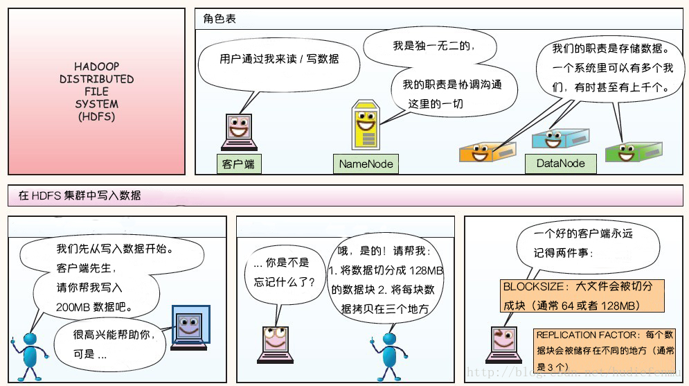
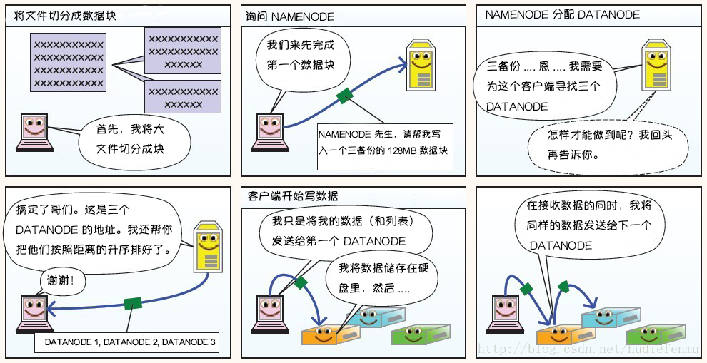
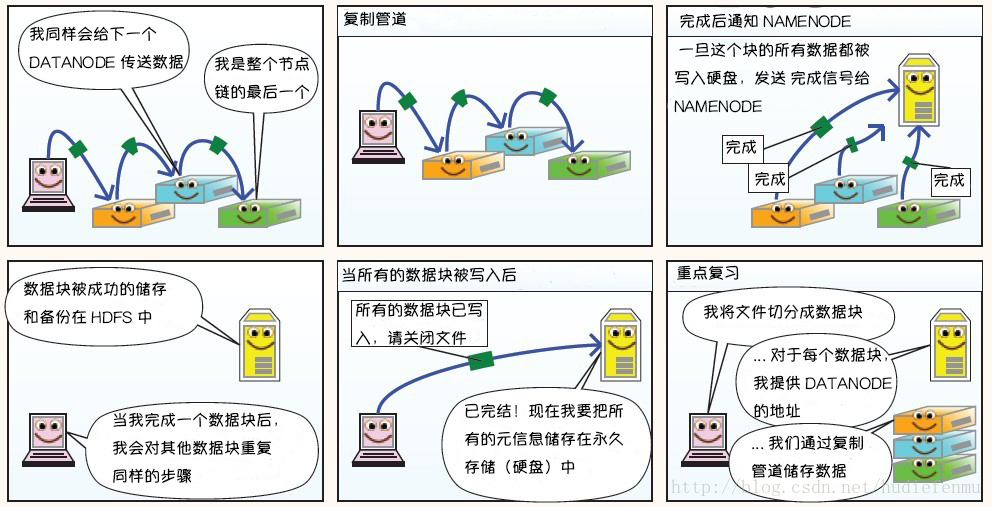
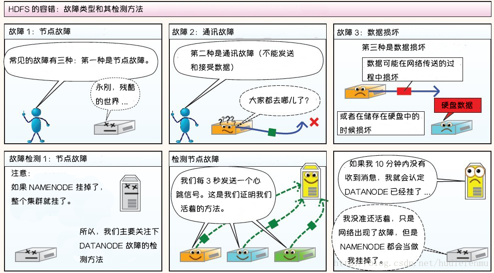
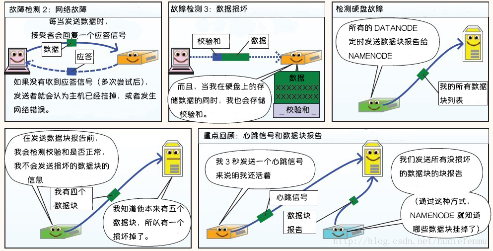
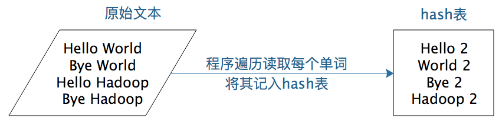

[TOC]
大数据入门
维基百科对于大数据的定义是，大数据（big data）指的是传统数据处理应用软件不足以处理的大或复杂的数据集。 而对于我们开发人员来说，学习大数据更多的是学习大数据相关的技术。我们可以将大数据处理的流程简单的分为，数据收集、数据存储、数据处理、数据应用等。
以上每个环节都有其技术栈，简单分类如下，这篇文章就带领大家入门这些技术
- 日志收集框架：Flume 、Logstash、Kibana
- 分布式文件存储系统：Hadoop HDFS
- 数据库系统：Mongodb、HBase
- 分布式计算框架：
- 批处理框架：Hadoop MapReduce
- 流处理框架：Storm
- 混合处理框架：Spark、Flink
- 查询分析框架：Hive 、Spark SQL 、Flink SQL、 Pig、Phoenix
- 集群资源管理器：Hadoop YARN
- 分布式协调服务：Zookeeper
- 数据迁移工具：Sqoop
- 任务调度框架：Azkaban、Oozie
- 集群部署和监控：Ambari、Cloudera Manager
安装
公欲利其事必先利其器，先把常用的全安装上！！！
安装Hadoop
下载完后，解压然后配置环境变量即可
-
下载 winutils https://github.com/cdarlint/winutils
下载完，解压后，找到对应的版本，拷贝其中的winutils.exe文件到hadoop的bin目录下
- 执行hadoop version 验证hadoop 安装是否成功
-
将安装目录\bin(我的是D:\tool\hadoop\hadoop-3.2.1)下的hadoop.dll复制到安装目录\sbin,以及
C:\Windows\System32这两个目录下 -
hadoop目录下创建以下目录\data\dfs\datanode、\data\dfs\namenode
-
修改etc\hadoop下的core-site.xml文件
<configuration> <property> <name>fs.defaultFS</name> <value>hdfs://localhost:9000</value> </property> </configuration> -
修改etc\hadoop下的hdfs-site.xml文件,具体路径为第5步中创建的文件夹路径
<configuration> <property> <name>dfs.replication</name> <value>1</value> </property> <property> <name>dfs.namenode.http-address</name> <value>localhost:50070</value> </property> <property> <name>dfs.namenode.dir</name> <value>/D:/tool/hadoop/hadoop-3.2.1/data/dfs/namenode</value> </property> <property> <name>dfs.datanode.name.dir</name> <value>/D:/tool/hadoop/hadoop-3.2.1/data/dfs/datanode</value> </property> </configuration> -
修改etc\hadoop下的mapred-site.xml文件
<configuration> <property> <name>mapreduce.framework.name</name> <value>yarn</value> </property> <property> <name>mapred.job.tracker</name> <value>hdfs://localhost:9001</value> </property> </configuration> -
修改etc\hadoop下的yarn-site.xml文件
<configuration> <property> <name>yarn.nodemanager.aux-services</name> <value>mapreduce_shuffle</value> </property> <property> <name>yarn.nodemanager.aux-services.mapreduce.shuffle.class</name> <value>org.apache.hadoop.mapred.ShuffleHandler</value> </property> </configuration> -
修改etc\hadoop下的hadoop-env.cmd文件。在文件的最后添加如下语句。
@rem set JAVA_HOME=%JAVA_HOME% set JAVA_HOME=自己的jdk路径 -
格式化HDFS 打开CMD，输入hdfs namenode -format
如果是3.2.1版本,会报如下的错
这是hadoop的bug，从这里下载https://github.com/tang2087/big-data/blob/master/hadoop-hdfs-3.2.1.jar，hadoop-hdfs-3.2.1.jar文件替换Hadoop-3.2.1\share\hadoop\hdfs下的hadoop-hdfs-3.2.1.jar文件
-
切换到\hadoop\hadoop-3.2.1\sbin目录，cmd，执行start-all.cmd，要关闭则执行stop-all.cmd
-
http://localhost:8088 能打开代表已经成功了
安装spark
-
安装spark https://archive.apache.org/dist/spark/spark-3.2.4/
下载完后，解压然后配置环境变量即可
-
下载Scala，https://github.com/scala/scala3/releases/tag/3.2.0
下载完后，解压然后配置环境变量即可
- 执行 scala 验证scala安装是否成功

- 执行 spark-shell 验证 spark 安装是否成功
安装Hive
-
下载https://archive.apache.org/dist/hive/hive-3.1.3/
解压后，并配置环境变量
-
将conf下的以下四个文件进行改名
hive-default.xml.template -> hive-site.xml hive-env.sh.template -> hive-env.sh hive-exec-log4j2.properties.template -> hive-exec-log4j2.properties hive-log4j2.properties.template -> hive-log4j2.properties -
在D:\tool\hive\apache-hive-3.1.3-bin（第1步解压后的目录），新增以下文件夹
\my_hive \my_hive\operation_logs_dir \my_hive\querylog_dir \my_hive\resources_dir \my_hive\scratch_dir -
修改conf下的hive-env.sh文件,注意改为自己的路径
# Set HADOOP_HOME to point to a specific hadoop install directory HADOOP_HOME=D:\tool\hive\apache-hive-3.1.3-bin # Hive Configuration Directory can be controlled by: export HIVE_CONF_DIR=D:\tool\hive\apache-hive-3.1.3-bin\conf # Folder containing extra ibraries required for hive compilation/execution can be controlled by: export HIVE_AUX_JARS_PATH=D:\tool\hive\apache-hive-3.1.3-bin\lib -
修改conf下的hive-site.xml文件，注意改为自己的路径
<property> <name>hive.exec.local.scratchdir</name> <value>D:/tool/hive/apache-hive-3.1.3-bin/my_hive/scratch_dir</value> <description>Local scratch space for Hive jobs</description> </property> <property> <name>hive.downloaded.resources.dir</name> <value>D:/tool/hive/apache-hive-3.1.3-bin/my_hive/resources_dir/${hive.session.id}_resources</value> <description>Temporary local directory for added resources in the remote file system.</description> </property> <property> <name>hive.querylog.location</name> <value>D:/tool/hive/apache-hive-3.1.3-bin/my_hive/querylog_dir</value> <description>Location of Hive run time structured log file</description> </property> <property> <property> <name>hive.server2.logging.operation.log.location</name> <value>D:/tool/hive/apache-hive-3.1.3-bin/my_hive/operation_logs_dir</value> <description>Top level directory where operation logs are stored if logging functionality is enabled</description> </property> -
启动Hadoop后，执行以下命令
hadoop fs -mkdir /tmp hadoop fs -mkdir /user/ hadoop fs -mkdir /user/hive/ hadoop fs -mkdir /user/hive/warehouse hadoop fs -chmod g+w /tmp hadoop fs -chmod g+w /user/hive/warehouse
安装Flink
-
下载 https://archive.apache.org/dist/flink/flink-1.18.0/
解压并配置环境变量
-
在bin文件夹下新增flink.bat 文件
::############################################################################### :: Licensed to the Apache Software Foundation (ASF) under one :: or more contributor license agreements. See the NOTICE file :: distributed with this work for additional information :: regarding copyright ownership. The ASF licenses this file :: to you under the Apache License, Version 2.0 (the :: "License"); you may not use this file except in compliance :: with the License. You may obtain a copy of the License at :: :: http://www.apache.org/licenses/LICENSE-2.0 :: :: Unless required by applicable law or agreed to in writing, software :: distributed under the License is distributed on an "AS IS" BASIS, :: WITHOUT WARRANTIES OR CONDITIONS OF ANY KIND, either express or implied. :: See the License for the specific language governing permissions and :: limitations under the License. ::############################################################################### @echo off setlocal SET bin=%~dp0 SET FLINK_HOME=%bin%.. SET FLINK_LIB_DIR=%FLINK_HOME%\lib SET FLINK_PLUGINS_DIR=%FLINK_HOME%\plugins SET JVM_ARGS=-Xmx512m SET FLINK_JM_CLASSPATH=%FLINK_LIB_DIR%\* java %JVM_ARGS% -cp "%FLINK_JM_CLASSPATH%"; org.apache.flink.client.cli.CliFrontend %* endlocal -
在bin文件夹下新增flink.bat 文件
::############################################################################### :: Licensed to the Apache Software Foundation (ASF) under one :: or more contributor license agreements. See the NOTICE file :: distributed with this work for additional information :: regarding copyright ownership. The ASF licenses this file :: to you under the Apache License, Version 2.0 (the :: "License"); you may not use this file except in compliance :: with the License. You may obtain a copy of the License at :: :: http://www.apache.org/licenses/LICENSE-2.0 :: :: Unless required by applicable law or agreed to in writing, software :: distributed under the License is distributed on an "AS IS" BASIS, :: WITHOUT WARRANTIES OR CONDITIONS OF ANY KIND, either express or implied. :: See the License for the specific language governing permissions and :: limitations under the License. ::############################################################################### @echo off setlocal EnableDelayedExpansion SET bin=%~dp0 SET FLINK_HOME=%bin%.. SET FLINK_LIB_DIR=%FLINK_HOME%\lib SET FLINK_PLUGINS_DIR=%FLINK_HOME%\plugins SET FLINK_CONF_DIR=%FLINK_HOME%\conf SET FLINK_LOG_DIR=%FLINK_HOME%\log SET JVM_ARGS=-Xms1024m -Xmx1024m SET FLINK_CLASSPATH=%FLINK_LIB_DIR%\* SET logname_jm=flink-%username%-jobmanager.log SET logname_tm=flink-%username%-taskmanager.log SET log_jm=%FLINK_LOG_DIR%\%logname_jm% SET log_tm=%FLINK_LOG_DIR%\%logname_tm% SET outname_jm=flink-%username%-jobmanager.out SET outname_tm=flink-%username%-taskmanager.out SET out_jm=%FLINK_LOG_DIR%\%outname_jm% SET out_tm=%FLINK_LOG_DIR%\%outname_tm% SET log_setting_jm=-Dlog.file="%log_jm%" -Dlogback.configurationFile=file:"%FLINK_CONF_DIR%/logback.xml" -Dlog4j.configuration=file:"%FLINK_CONF_DIR%/log4j.properties" SET log_setting_tm=-Dlog.file="%log_tm%" -Dlogback.configurationFile=file:"%FLINK_CONF_DIR%/logback.xml" -Dlog4j.configuration=file:"%FLINK_CONF_DIR%/log4j.properties" :: Log rotation (quick and dirty) CD "%FLINK_LOG_DIR%" for /l %%x in (5, -1, 1) do ( SET /A y = %%x+1 RENAME "%logname_jm%.%%x" "%logname_jm%.!y!" 2> nul RENAME "%logname_tm%.%%x" "%logname_tm%.!y!" 2> nul RENAME "%outname_jm%.%%x" "%outname_jm%.!y!" 2> nul RENAME "%outname_tm%.%%x" "%outname_tm%.!y!" 2> nul ) RENAME "%logname_jm%" "%logname_jm%.0" 2> nul RENAME "%logname_tm%" "%logname_tm%.0" 2> nul RENAME "%outname_jm%" "%outname_jm%.0" 2> nul RENAME "%outname_tm%" "%outname_tm%.0" 2> nul DEL "%logname_jm%.6" 2> nul DEL "%logname_tm%.6" 2> nul DEL "%outname_jm%.6" 2> nul DEL "%outname_tm%.6" 2> nul for %%X in (java.exe) do (set FOUND=%%~$PATH:X) if not defined FOUND ( echo java.exe was not found in PATH variable goto :eof ) echo Starting a local cluster with one JobManager process and one TaskManager process. echo You can terminate the processes via CTRL-C in the spawned shell windows. echo Web interface by default on http://localhost:8081/. start java %JVM_ARGS% %log_setting_jm% -cp "%FLINK_CLASSPATH%"; org.apache.flink.runtime.entrypoint.StandaloneSessionClusterEntrypoint --configDir "%FLINK_CONF_DIR%" > "%out_jm%" 2>&1 start java %JVM_ARGS% %log_setting_tm% -cp "%FLINK_CLASSPATH%"; org.apache.flink.runtime.taskexecutor.TaskManagerRunner --configDir "%FLINK_CONF_DIR%" > "%out_tm%" 2>&1 endlocal -
执行bin\start-cluster.bat，访问http://localhost:8081/，能访问代表成功
Hadoop
作为大数据技术的老大哥，学习大数据自然要从Hadoop开始。
The Apache Hadoop software library is a framework that allows for the distributed processing of large data sets across clusters of computers using simple programming models. It is designed to scale up from single servers to thousands of machines, each offering local computation and storage. Rather than rely on hardware to deliver high-availability, the library itself is designed to detect and handle failures at the application layer, so delivering a highly-available service on top of a cluster of computers, each of which may be prone to failures.
Apache Hadoop 软件库是一个框架，允许使用简单的编程模型跨计算机集群分布式处理大型数据集。它旨在从单个服务器扩展到数千台机器，每台机器都提供本地计算和存储。该库本身不是依靠硬件来提供高可用性，而是旨在检测和处理应用程序层的故障，以便在计算机集群之上提供高可用性服务，而每台计算机都可能容易出现故障。
Hadoop 主要包含以下三个核心组件
- HDFS ：分布式文件系统，提供对应用程序数据的高吞吐量访问。
- MapReduce：分布式计算框架。
- YARN ：作业调度和集群资源管理框架。
HDFS
Hadoop分布式文件系统HDFS的设计目标是管理数以千计的服务器、数以万计的磁盘，将这么大规模的服务器计算资源当作一个单一的存储系统进行管理，对应用程序提供数以PB计的存储容量，让应用程序像使用普通文件系统一样存储大规模的文件数据。
HDFS是在一个大规模分布式服务器集群上，对数据分片后进行并行读写及冗余存储。因为HDFS可以部署在一个比较大的服务器集群上，集群中所有服务器的磁盘都可供HDFS使用，所以整个HDFS的存储空间可以达到PB级容量。

上图是HDFS的架构图，从图中你可以看到HDFS的关键组件有两个，一个是DataNode，一个是NameNode。
DataNode负责文件数据的存储和读写操作，HDFS将文件数据分割成若干数据块（Block），每个DataNode存储一部分数据块，这样文件就分布存储在整个HDFS服务器集群中。应用程序客户端（Client）可以并行对这些数据块进行访问，从而使得HDFS可以在服务器集群规模上实现数据并行访问，极大地提高了访问速度。
在实践中，HDFS集群的DataNode服务器会有很多台，一般在几百台到几千台这样的规模，每台服务器配有数块磁盘，整个集群的存储容量大概在几PB到数百PB。
NameNode负责整个分布式文件系统的元数据（MetaData）管理，也就是文件路径名、数据块的ID以及存储位置等信息，相当于操作系统中文件分配表（FAT）的角色。HDFS为了保证数据的高可用，会将一个数据块复制为多份（缺省情况为3份），并将多份相同的数据块存储在不同的服务器上，甚至不同的机架上。这样当有磁盘损坏，或者某个DataNode服务器宕机，甚至某个交换机宕机，导致其存储的数据块不能访问的时候，客户端会查找其备份的数据块进行访问。
下面这张图是数据块多份复制存储的示意，图中对于文件/users/sameerp/data/part-0，其复制备份数设置为2，存储的BlockID分别为1、3。Block1的两个备份存储在DataNode0和DataNode2两个服务器上，Block3的两个备份存储DataNode4和DataNode6两个服务器上，上述任何一台服务器宕机后，每个数据块都至少还有一个备份存在，不会影响对文件/users/sameerp/data/part-0的访问。
数据分成若干数据块后存储到不同服务器上，可以实现数据大容量存储，并且不同分片的数据可以并行进行读/写操作，进而实现数据的高速访问。
HDFS的高可用设计。
1.存储故障容错
磁盘介质在存储过程中受环境或者老化影响，其存储的数据可能会出现错乱。HDFS的应对措施是，对于存储在DataNode上的数据块，计算并存储校验和（CheckSum）。在读取数据的时候，重新计算读取出来的数据的校验和，如果校验不正确就抛出异常，应用程序捕获异常后就到其他DataNode上读取备份数据。
2.磁盘故障容错
如果DataNode监测到本机的某块磁盘损坏，就将该块磁盘上存储的所有BlockID报告给NameNode，NameNode检查这些数据块还在哪些DataNode上有备份，通知相应的DataNode服务器将对应的数据块复制到其他服务器上，以保证数据块的备份数满足要求。
3.DataNode故障容错
DataNode会通过心跳和NameNode保持通信，如果DataNode超时未发送心跳，NameNode就会认为这个DataNode已经宕机失效，立即查找这个DataNode上存储的数据块有哪些，以及这些数据块还存储在哪些服务器上，随后通知这些服务器再复制一份数据块到其他服务器上，保证HDFS存储的数据块备份数符合用户设置的数目，即使再出现服务器宕机，也不会丢失数据。
4.NameNode故障容错
NameNode是整个HDFS的核心，记录着HDFS文件分配表信息，所有的文件路径和数据块存储信息都保存在NameNode，如果NameNode故障，整个HDFS系统集群都无法使用；如果NameNode上记录的数据丢失，整个集群所有DataNode存储的数据也就没用了。
所以，NameNode高可用容错能力非常重要。NameNode采用主从热备的方式提供高可用服务，请看下图。

集群部署两台NameNode服务器，一台作为主服务器提供服务，一台作为从服务器进行热备，两台服务器通过ZooKeeper选举，主要是通过争夺znode锁资源，决定谁是主服务器。而DataNode则会向两个NameNode同时发送心跳数据，但是只有主NameNode才能向DataNode返回控制信息。
正常运行期间，主从NameNode之间通过一个共享存储系统shared edits来同步文件系统的元数据信息。当主NameNode服务器宕机，从NameNode会通过ZooKeeper升级成为主服务器，并保证HDFS集群的元数据信息，也就是文件分配表信息完整一致。
图解
HDFS写数据原理



HDFS读数据原理

HDFS故障类型和其检测方法


读写故障的处理

DataNode 故障处理
副本布局策略
小结
HDFS有以下特点
- 高容错： 由于 HDFS 采用数据的多副本方案，所以部分硬件的损坏不会导致全部数据的丢失。
- 高吞吐量 ：HDFS 设计的重点是支持高吞吐量的数据访问，而不是低延迟的数据访问。
- 大文件支持： HDFS 适合于大文件的存储，文档的大小应该是是 GB 到 TB 级别的。
- 简单一致性模型： HDFS 更适合于一次写入多次读取 (write-once-read-many) 的访问模型。支持将内容追加到文件末尾， 但不支持数据的随机访问，不能从文件任意位置新增数据。
- 跨平台移植性： HDFS 具有良好的跨平台移植性，这使得其他大数据计算框架都将其作为数据持久化存储的首选方案。
MapReduce
在Hadoop问世之前，其实已经有了分布式计算，只是那个时候的分布式计算都是专用的系统，只能专门处理某一类计算，比如进行大规模数据的排序。很显然，这样的系统无法复用到其他的大数据计算场景，每一种应用都需要开发与维护专门的系统**。而Hadoop MapReduce的出现，使得大数据计算通用编程成为可能**。我们只要遵循MapReduce编程模型编写业务处理逻辑代码，就可以运行在Hadoop分布式集群上，无需关心分布式计算是如何完成的。也就是说，我们只需要关心业务逻辑，不用关心系统调用与运行环境，这和我们目前的主流开发方式是一致的。
其实MapReduce编程模型并不是Hadoop原创，甚至也不是Google原创，但是Google和Hadoop创造性地将MapReduce编程模型用到大数据计算上，立刻产生了神奇的效果，看似复杂的各种各样的机器学习、数据挖掘、SQL处理等大数据计算变得简单清晰起来。
MapReduce既是一个编程模型，又是一个计算框架。也就是说，开发人员必须基于MapReduce编程模型进行编程开发，然后将程序通过MapReduce计算框架分发到Hadoop集群中运行。我们先看一下作为编程模型的MapReduce。
为什么说MapReduce是一种非常简单又非常强大的编程模型？
简单在于其编程模型只包含Map和Reduce两个过程，map的主要输入是一对值，经过map计算后输出一对值；然后将相同Key合并，形成；再将这个输入reduce，经过计算输出零个或多个对。
同时，MapReduce又是非常强大的，不管是关系代数运算（SQL计算），还是矩阵运算（图计算），大数据领域几乎所有的计算需求都可以通过MapReduce编程来实现。
下面，以WordCount程序为例，一起来看下MapReduce的计算过程。
WordCount主要解决的是文本处理中词频统计的问题，就是统计文本中每一个单词出现的次数。如果只是统计一篇文章的词频，几十KB到几MB的数据，只需要写一个程序，将数据读入内存，建一个Hash表记录每个词出现的次数就可以了。这个统计过程你可以看下面这张图。

如果用Python语言，单机处理WordCount的代码是这样的。
# 文本前期处理
strl_ist = str.replace('\n', '').lower().split(' ')
count_dict = {}
# 如果字典里有该单词则加1，否则添加入字典
for str in strl_ist:
if str in count_dict.keys():
count_dict[str] = count_dict[str] + 1
else:
count_dict[str] = 1
简单说来，就是建一个Hash表，然后将字符串里的每个词放到这个Hash表里。如果这个词第一次放到Hash表，就新建一个Key、Value对，Key是这个词，Value是1。如果Hash表里已经有这个词了，那么就给这个词的Value + 1。
小数据量用单机统计词频很简单，但是如果想统计全世界互联网所有网页（数万亿计）的词频数（而这正是Google这样的搜索引擎的典型需求），不可能写一个程序把全世界的网页都读入内存，这时候就需要用MapReduce编程来解决。
WordCount的MapReduce程序如下。
public class WordCount {
public static class TokenizerMapper
extends Mapper<Object, Text, Text, IntWritable>{
private final static IntWritable one = new IntWritable(1);
private Text word = new Text();
public void map(Object key, Text value, Context context
) throws IOException, InterruptedException {
StringTokenizer itr = new StringTokenizer(value.toString());
while (itr.hasMoreTokens()) {
word.set(itr.nextToken());
context.write(word, one);
}
}
}
public static class IntSumReducer
extends Reducer<Text,IntWritable,Text,IntWritable> {
private IntWritable result = new IntWritable();
public void reduce(Text key, Iterable<IntWritable> values,
Context context
) throws IOException, InterruptedException {
int sum = 0;
for (IntWritable val : values) {
sum += val.get();
}
result.set(sum);
context.write(key, result);
}
}
}
你可以从这段代码中看到，MapReduce版本WordCount程序的核心是一个map函数和一个reduce函数。
map函数的输入主要是一个对，在这个例子里，Value是要统计的所有文本中的一行数据，Key在一般计算中都不会用到。
public void map(Object key, Text value, Context context)
map函数的计算过程是，将这行文本中的单词提取出来，针对每个单词输出一个这样的对。
MapReduce计算框架会将这些收集起来，将相同的word放在一起，形成>这样的数据，然后将其输入给reduce函数。
public void reduce(Text key, Iterable<IntWritable> values, Context context)
这里reduce的输入参数Values就是由很多个1组成的集合，而Key就是具体的单词word。
reduce函数的计算过程是，将这个集合里的1求和，再将单词（word）和这个和（sum）组成一个，也就是输出。每一个输出就是一个单词和它的词频统计总和。
一个map函数可以针对一部分数据进行运算，这样就可以将一个大数据切分成很多块（这也正是HDFS所做的），MapReduce计算框架为每个数据块分配一个map函数去计算，从而实现大数据的分布式计算。
假设有两个数据块的文本数据需要进行词频统计，MapReduce计算过程如下图所示。

以上就是MapReduce编程模型的主要计算过程和原理，但是这样一个MapReduce程序要想在分布式环境中执行，并处理海量的大规模数据，还需要一个计算框架，能够调度执行这个MapReduce程序，使它在分布式的集群中并行运行，而这个计算框架也叫MapReduce。
所以，当我们说MapReduce的时候，可能指编程模型，也就是一个MapReduce程序；也可能是指计算框架，调度执行大数据的分布式计算。
那么这个程序是如何在分布式集群中运行起来的呢？MapReduce程序又是如何找到相应的数据并进行计算的呢？答案就是需要MapReduce计算框架来完成。
首先我想告诉你，在实践中，这个过程有两个关键问题需要处理。
- 如何为每个数据块分配一个Map计算任务，也就是代码是如何发送到数据块所在服务器的，发送后是如何启动的，启动以后如何知道自己需要计算的数据在文件什么位置（BlockID是什么）。
- 处于不同服务器的map输出的 ，如何把相同的Key聚合在一起发送给Reduce任务进行处理。
那么这两个关键问题对应在MapReduce计算过程的哪些步骤呢？你可以看到图中标红的两处，这两个关键问题对应的就是图中的两处“MapReduce框架处理”，具体来说，它们分别是MapReduce作业启动和运行，以及MapReduce数据合并与连接。
MapReduce作业启动和运行机制
我们以Hadoop 1为例，MapReduce运行过程涉及三类关键进程。
1.大数据应用进程。这类进程是启动MapReduce程序的主入口，主要是指定Map和Reduce类、输入输出文件路径等，并提交作业给Hadoop集群，也就是下面提到的JobTracker进程。这是由用户启动的MapReduce程序进程，比如我们上期提到的WordCount程序。
2.JobTracker进程。这类进程根据要处理的输入数据量，命令下面提到的TaskTracker进程启动相应数量的Map和Reduce进程任务，并管理整个作业生命周期的任务调度和监控。这是Hadoop集群的常驻进程，需要注意的是，JobTracker进程在整个Hadoop集群全局唯一。
3.TaskTracker进程。这个进程负责启动和管理Map进程以及Reduce进程。因为需要每个数据块都有对应的map函数，TaskTracker进程通常和HDFS的DataNode进程启动在同一个服务器。也就是说，Hadoop集群中绝大多数服务器同时运行DataNode进程和TaskTracker进程。
JobTracker进程和TaskTracker进程是主从关系，主服务器通常只有一台（或者另有一台备机提供高可用服务，但运行时只有一台服务器对外提供服务，真正起作用的只有一台），从服务器可能有几百上千台，所有的从服务器听从主服务器的控制和调度安排。主服务器负责为应用程序分配服务器资源以及作业执行的调度，而具体的计算操作则在从服务器上完成。
具体来看，MapReduce的主服务器就是JobTracker，从服务器就是TaskTracker。还记得我们讲HDFS也是主从架构吗，HDFS的主服务器是NameNode，从服务器是DataNode。后面会讲到的Yarn、Spark等也都是这样的架构，这种一主多从的服务器架构也是绝大多数大数据系统的架构方案。
可重复使用的架构方案叫作架构模式，一主多从可谓是大数据领域的最主要的架构模式。主服务器只有一台，掌控全局；从服务器有很多台，负责具体的事情。这样很多台服务器可以有效组织起来，对外表现出一个统一又强大的计算能力。
讲到这里，我们对MapReduce的启动和运行机制有了一个直观的了解。那具体的作业启动和计算过程到底是怎样的呢？我根据上面所讲的绘制成一张图，你可以从图中一步一步来看，感受一下整个流程。

如果我们把这个计算过程看作一次小小的旅行，这个旅程可以概括如下：
1.应用进程JobClient将用户作业JAR包存储在HDFS中，将来这些JAR包会分发给Hadoop集群中的服务器执行MapReduce计算。
2.应用程序提交job作业给JobTracker。
3.JobTracker根据作业调度策略创建JobInProcess树，每个作业都会有一个自己的JobInProcess树。
4.JobInProcess根据输入数据分片数目（通常情况就是数据块的数目）和设置的Reduce数目创建相应数量的TaskInProcess。
5.TaskTracker进程和JobTracker进程进行定时通信。
6.如果TaskTracker有空闲的计算资源（有空闲CPU核心），JobTracker就会给它分配任务。分配任务的时候会根据TaskTracker的服务器名字匹配在同一台机器上的数据块计算任务给它，使启动的计算任务正好处理本机上的数据，以实现我们一开始就提到的“移动计算比移动数据更划算”。
7.TaskTracker收到任务后根据任务类型（是Map还是Reduce）和任务参数（作业JAR包路径、输入数据文件路径、要处理的数据在文件中的起始位置和偏移量、数据块多个备份的DataNode主机名等），启动相应的Map或者Reduce进程。
8.Map或者Reduce进程启动后，检查本地是否有要执行任务的JAR包文件，如果没有，就去HDFS上下载，然后加载Map或者Reduce代码开始执行。
9.如果是Map进程，从HDFS读取数据（通常要读取的数据块正好存储在本机）；如果是Reduce进程，将结果数据写出到HDFS。
通过这样一个计算旅程，MapReduce可以将大数据作业计算任务分布在整个Hadoop集群中运行，每个Map计算任务要处理的数据通常都能从本地磁盘上读取到。现在你对这个过程的理解是不是更清楚了呢？你也许会觉得，这个过程好像也不算太简单啊！
其实，你要做的仅仅是编写一个map函数和一个reduce函数就可以了，根本不用关心这两个函数是如何被分布启动到集群上的，也不用关心数据块又是如何分配给计算任务的。这一切都由MapReduce计算框架完成！是不是很激动，这也是我们反复讲到的MapReduce的强大之处。
MapReduce数据合并与连接机制
MapReduce计算真正产生奇迹的地方是数据的合并与连接。
让我先回到上一期MapReduce编程模型的WordCount例子中，我们想要统计相同单词在所有输入数据中出现的次数，而一个Map只能处理一部分数据，一个热门单词几乎会出现在所有的Map中，这意味着同一个单词必须要合并到一起进行统计才能得到正确的结果。
事实上，几乎所有的大数据计算场景都需要处理数据关联的问题，像WordCount这种比较简单的只要对Key进行合并就可以了，对于像数据库的join操作这种比较复杂的，需要对两种类型（或者更多类型）的数据根据Key进行连接。
在map输出与reduce输入之间，MapReduce计算框架处理数据合并与连接操作，这个操作有个专门的词汇叫shuffle。那到底什么是shuffle？shuffle的具体过程又是怎样的呢？请看下图。

每个Map任务的计算结果都会写入到本地文件系统，等Map任务快要计算完成的时候，MapReduce计算框架会启动shuffle过程，在Map任务进程调用一个Partitioner接口，对Map产生的每个进行Reduce分区选择，然后通过HTTP通信发送给对应的Reduce进程。这样不管Map位于哪个服务器节点，相同的Key一定会被发送给相同的Reduce进程。Reduce任务进程对收到的进行排序和合并，相同的Key放在一起，组成一个传递给Reduce执行。
map输出的shuffle到哪个Reduce进程是这里的关键，它是由Partitioner来实现，MapReduce框架默认的Partitioner用Key的哈希值对Reduce任务数量取模，相同的Key一定会落在相同的Reduce任务ID上。从实现上来看的话，这样的Partitioner代码只需要一行。
/** Use {@link Object#hashCode()} to partition. */
public int getPartition(K2 key, V2 value, int numReduceTasks) {
return (key.hashCode() & Integer.MAX_VALUE) % numReduceTasks;
}
讲了这么多，对shuffle的理解，你只需要记住这一点：分布式计算需要将不同服务器上的相关数据合并到一起进行下一步计算，这就是shuffle。
shuffle是大数据计算过程中最神奇的地方，不管是MapReduce还是Spark，只要是大数据批处理计算，一定都会有shuffle过程，只有让数据关联起来，数据的内在关系和价值才会呈现出来。如果你不理解shuffle，肯定会在map和reduce编程中产生困惑，不知道该如何正确设计map的输出和reduce的输入。
YARN
Yarn并不是随Hadoop的推出一开始就有的，Yarn作为分布式集群的资源调度框架，它的出现伴随着Hadoop的发展，使Hadoop从一个单一的大数据计算引擎，成为一个集存储、计算、资源管理为一体的完整大数据平台，进而发展出自己的生态体系，成为大数据的代名词。
先回忆一下我们学习的MapReduce的架构，在MapReduce应用程序的启动过程中，最重要的就是要把MapReduce程序分发到大数据集群的服务器上，在Hadoop 1中，这个过程主要是通过TaskTracker和JobTracker通信来完成。
这个方案有什么缺点吗？
这种架构方案的主要缺点是，服务器集群资源调度管理和MapReduce执行过程耦合在一起，如果想在当前集群中运行其他计算任务，比如Spark或者Storm，就无法统一使用集群中的资源了。
在Hadoop早期的时候，大数据技术就只有Hadoop一家，这个缺点并不明显。但随着大数据技术的发展，各种新的计算框架不断出现，我们不可能为每一种计算框架部署一个服务器集群，而且就算能部署新集群，数据还是在原来集群的HDFS上。所以我们需要把MapReduce的资源管理和计算框架分开，这也是Hadoop 2最主要的变化，就是将Yarn从MapReduce中分离出来，成为一个独立的资源调度框架。
Yarn是“Yet Another Resource Negotiator”的缩写，字面意思就是“另一种资源调度器”。事实上，在Hadoop社区决定将资源管理从Hadoop 1中分离出来，独立开发Yarn的时候，业界已经有一些大数据资源管理产品了，比如Mesos等，所以Yarn的开发者索性管自己的产品叫“另一种资源调度器”。这种命名方法并不鲜见，曾经名噪一时的Java项目编译工具Ant就是“Another Neat Tool”的缩写，意思是“另一种整理工具”。
下图是Yarn的架构。
从图上看，Yarn包括两个部分：一个是资源管理器（Resource Manager），一个是节点管理器（Node Manager）。这也是Yarn的两种主要进程：ResourceManager进程负责整个集群的资源调度管理，通常部署在独立的服务器上；NodeManager进程负责具体服务器上的资源和任务管理，在集群的每一台计算服务器上都会启动，基本上跟HDFS的DataNode进程一起出现。
具体说来，资源管理器又包括两个主要组件：调度器和应用程序管理器。
调度器其实就是一个资源分配算法，根据应用程序（Client）提交的资源申请和当前服务器集群的资源状况进行资源分配。Yarn内置了几种资源调度算法，包括Fair Scheduler、Capacity Scheduler等，你也可以开发自己的资源调度算法供Yarn调用。
Yarn进行资源分配的单位是容器（Container），每个容器包含了一定量的内存、CPU等计算资源，默认配置下，每个容器包含一个CPU核心。容器由NodeManager进程启动和管理，NodeManger进程会监控本节点上容器的运行状况并向ResourceManger进程汇报。
应用程序管理器负责应用程序的提交、监控应用程序运行状态等。应用程序启动后需要在集群中运行一个ApplicationMaster，ApplicationMaster也需要运行在容器里面。每个应用程序启动后都会先启动自己的ApplicationMaster，由ApplicationMaster根据应用程序的资源需求进一步向ResourceManager进程申请容器资源，得到容器以后就会分发自己的应用程序代码到容器上启动，进而开始分布式计算。
我们以一个MapReduce程序为例，来看一下Yarn的整个工作流程。
- 我们向Yarn提交应用程序，包括MapReduce ApplicationMaster、我们的MapReduce程序，以及MapReduce Application启动命令。
- ResourceManager进程和NodeManager进程通信，根据集群资源，为用户程序分配第一个容器，并将MapReduce ApplicationMaster分发到这个容器上面，并在容器里面启动MapReduce ApplicationMaster。
- MapReduce ApplicationMaster启动后立即向ResourceManager进程注册，并为自己的应用程序申请容器资源。
- MapReduce ApplicationMaster申请到需要的容器后，立即和相应的NodeManager进程通信，将用户MapReduce程序分发到NodeManager进程所在服务器，并在容器中运行，运行的就是Map或者Reduce任务。
- Map或者Reduce任务在运行期和MapReduce ApplicationMaster通信，汇报自己的运行状态，如果运行结束，MapReduce ApplicationMaster向ResourceManager进程注销并释放所有的容器资源。
MapReduce如果想在Yarn上运行，就需要开发遵循Yarn规范的MapReduce ApplicationMaster，相应地，其他大数据计算框架也可以开发遵循Yarn规范的ApplicationMaster，这样在一个Yarn集群中就可以同时并发执行各种不同的大数据计算框架，实现资源的统一调度管理。
小结
Yarn作为一个大数据资源调度框架，调度的是大数据计算引擎本身。它不像MapReduce或Spark编程，每个大数据应用开发者都需要根据需求开发自己的MapReduce程序或者Spark程序。而现在主流的大数据计算引擎所使用的Yarn模块，也早已被这些计算引擎的开发者做出来供我们使用了。作为普通的大数据开发者，我们几乎没有机会编写Yarn的相关程序。但是，这是否意味着只有大数据计算引擎的开发者需要基于Yarn开发，才需要理解Yarn的实现原理呢？
恰恰相反，我认为理解Yarn的工作原理和架构，对于正确使用大数据技术，理解大数据的工作原理，是非常重要的。在云计算的时代，一切资源都是动态管理的，理解这种动态管理的原理对于理解云计算也非常重要。Yarn作为一个大数据平台的资源管理框架，简化了应用场景，对于帮助我们理解云计算的资源管理很有帮助。
Hive
前面我们讲过，MapReduce的出现大大简化了大数据编程的难度，使得大数据计算不再是高不可攀的技术圣殿，普通工程师也能使用MapReduce开发大数据程序。但是对于经常需要进行大数据计算的人，比如从事研究商业智能（BI）的数据分析师来说，他们通常使用SQL进行大数据分析和统计，MapReduce编程还是有一定的门槛。而且如果每次统计和分析都开发相应的MapReduce程序，成本也确实太高了。那么有没有更简单的办法，可以直接将SQL运行在大数据平台上呢？
在给出答案前，我们先看看如何用MapReduce实现SQL数据分析。
MapReduce实现SQL的原理
对于常见的一条SQL分析语句，MapReduce如何编程实现？
SELECT pageid, age, count(1) FROM pv_users GROUP BY pageid, age;
这是一条非常常见的SQL统计分析语句，统计不同年龄的用户访问不同网页的兴趣偏好，对于产品运营和设计很有价值。具体数据输入和执行结果请看下面的图示。

左边是要分析的数据表，右边是分析结果。实际上把左边表相同的行进行累计求和，就得到右边的表了，看起来跟WordCount的计算很相似。确实也是这样，我们看下这条SQL语句的MapReduce的计算过程，按照MapReduce编程模型，map和reduce函数的输入输出以及函数处理过程分别是什么。
首先，看下map函数的输入Key和Value，我们主要看Value。Value就是左边表中每一行的数据，比如<1, 25>这样。map函数的输出就是以输入的Value作为Key，Value统一设为1，比如«1, 25>, 1>这样。
map函数的输出经过shuffle以后，相同的Key及其对应的Value被放在一起组成一个，作为输入交给reduce函数处理。比如«2, 25>, 1>被map函数输出两次，那么到了reduce这里，就变成输入«2, 25>, <1, 1»，这里的Key是<2, 25>，Value集合是<1, 1>。
在reduce函数内部，Value集合里所有的数字被相加，然后输出。所以reduce的输出就是«2, 25>, 2>。
讲起来有点拗口，我把这个过程画成了一张图，看起来就清楚多了。

这样一条很有实用价值的SQL就被很简单的MapReduce计算过程处理好了。
在数据仓库中，SQL是最常用的分析工具，既然一条SQL可以通过MapReduce程序实现，那么有没有工具能够自动将SQL生成MapReduce代码呢？这样数据分析师只要输入SQL，就可以自动生成MapReduce可执行的代码，然后提交Hadoop执行，也就完美解决了我们最开始提出的问题。问题的答案，也就是这个神奇的工具就是Hadoop大数据仓库Hive。
Hive 简介
Hive 是一个构建在 Hadoop 之上的数据仓库，它可以将结构化的数据文件映射成表，并提供类 SQL 查询功能，用于查询的 SQL 语句会被转化为 MapReduce 作业，然后提交到 Hadoop 上运行。 特点：
-
简单、容易上手 (提供了类似 sql 的查询语言 hql)，使得精通 sql 但是不了解 Java 编程的人也能很好地进行大数据分析；
-
灵活性高，可以自定义用户函数 (UDF) 和存储格式；
-
为超大的数据集设计的计算和存储能力，集群扩展容易;
-
统一的元数据管理，可与 presto／impala／sparksql 等共享数据；
-
执行延迟高，不适合做数据的实时处理，但适合做海量数据的离线处理。
Hive的架构
Hive能够直接处理我们输入的SQL语句，调用MapReduce计算框架完成数据分析操作。下面是它的架构图，我们结合架构图来看看Hive是如何实现将SQL生成MapReduce可执行代码的。

我们通过Hive的Client（Hive的命令行工具，JDBC等）向Hive提交SQL命令。如果是创建数据表的DDL（数据定义语言），Hive就会通过执行引擎Driver将数据表的信息记录在Metastore元数据组件中，这个组件通常用一个关系数据库实现，记录表名、字段名、字段类型、关联HDFS文件路径等这些数据库的Meta信息（元信息）。
如果我们提交的是查询分析数据的DQL（数据查询语句），Driver就会将该语句提交给自己的编译器Compiler进行语法分析、语法解析、语法优化等一系列操作，最后生成一个MapReduce执行计划。然后根据执行计划生成一个MapReduce的作业，提交给Hadoop MapReduce计算框架处理。
对于一个较简单的SQL命令，比如：
SELECT * FROM status_updates WHERE status LIKE ‘michael jackson’;
它对应的Hive执行计划如下图。

Hive内部预置了很多函数，Hive的执行计划就是根据SQL语句生成这些函数的DAG（有向无环图），然后封装进MapReduce的map和reduce函数中。这个例子中，map函数调用了三个Hive内置函数TableScanOperator、FilterOperator、FileOutputOperator，就完成了map计算，而且无需reduce函数。
小结
在实践中，工程师其实并不需要经常编写MapReduce程序，因为网站最主要的大数据处理就是SQL分析，也因此Hive在大数据应用中的作用非常重要。
后面随着Hive的普及，我们对于在Hadoop上执行SQL的需求越加强烈，对大数据SQL的应用场景也多样化起来，于是又开发了各种大数据SQL引擎。
Cloudera开发了Impala，这是一种运行在HDFS上的MPP架构的SQL引擎。和MapReduce启动Map和Reduce两种执行进程，将计算过程分成两个阶段进行计算不同，Impala在所有DataNode服务器上部署相同的Impalad进程，多个Impalad进程相互协作，共同完成SQL计算。在一些统计场景中，Impala可以做到毫秒级的计算速度。
后来Spark出道以后，也迅速推出了自己的SQL引擎Shark，也就是后来的Spark SQL，将SQL语句解析成Spark的执行计划，在Spark上执行。由于Spark比MapReduce快很多，Spark SQL也相应比Hive快很多，并且随着Spark的普及，Spark SQL也逐渐被人们接受。后来Hive推出了Hive on Spark，将Hive的执行计划转换成Spark的计算模型。
Hive本身的技术架构其实并没有什么创新，数据库相关的技术和架构已经非常成熟，只要将这些技术架构应用到MapReduce上就得到了Hadoop大数据仓库Hive。但是想到将两种技术嫁接到一起，却是极具创新性的，通过嫁接产生出的Hive可以极大降低大数据的应用门槛，也使Hadoop大数据技术得到大规模普及。
Spark
Apache Spark is a unified analytics engine for large-scale data processing. It provides high-level APIs in Java, Scala, Python and R, and an optimized engine that supports general execution graphs. It also supports a rich set of higher-level tools including Spark SQL for SQL and structured data processing, pandas API on Spark for pandas workloads, MLlib for machine learning, GraphX for graph processing, and Structured Streaming for incremental computation and stream processing. Apache Spark 是用于大规模数据处理的统一分析引擎。 它提供 Java、Scala、Python 和 R 的高级 API， 以及支持通用执行图的优化引擎。 它还支持一组丰富的高级工具，包括 Spark SQL用于 SQL 和结构化数据处理， Spark 上用于 pandas 工作负载的 pandas API ， 用于机器学习的MLlib ， 用于图形处理的GraphX和结构化流 用于增量计算和流处理。
Spark 于 2009 年诞生于加州大学伯克利分校 AMPLab，2013 年被捐赠给 Apache 软件基金会，2014 年 2 月成为 Apache 的顶级项目。相对于 MapReduce 的批处理计算，Spark 可以带来上百倍的性能提升，因此它成为继 MapReduce 之后，最为广泛使用的分布式计算框架。
特点
Apache Spark 具有以下特点：
- 使用先进的 DAG 调度程序，查询优化器和物理执行引擎，以实现性能上的保证；
- 多语言支持，目前支持的有 Java，Scala，Python 和 R；
- 提供了 80 多个高级 API，可以轻松地构建应用程序；
- 支持批处理，流处理和复杂的业务分析；
- 丰富的类库支持：包括 SQL，MLlib，GraphX 和 Spark Streaming 等库，并且可以将它们无缝地进行组合；
- 丰富的部署模式：支持本地模式和自带的集群模式，也支持在 Hadoop，Mesos，Kubernetes 上运行；
- 多数据源支持：支持访问 HDFS，Alluxio，Cassandra，HBase，Hive 以及数百个其他数据源中的数据。

架构
| Term（术语） | Meaning（含义） |
|---|---|
| Application | Spark 应用程序，由集群上的一个 Driver 节点和多个 Executor 节点组成。 |
| Driver program | 主运用程序，该进程运行应用的 main() 方法并且创建 SparkContext |
| Cluster manager | 集群资源管理器（例如，Standlone Manager，Mesos，YARN） |
| Worker node | 执行计算任务的工作节点 |
| Executor | 位于工作节点上的应用进程，负责执行计算任务并且将输出数据保存到内存或者磁盘中 |
| Task | 被发送到 Executor 中的工作单元 |

Spark的执行过程：Driver进程解析用户代码，构建计算流图，并将其拆解为多个阶段（Stage），并将每个阶段拆解为多个任务（Task），Driver将任务分配给Executor ，Executor 启动线程并发的执行任务，任务执行完成后，Executor 将结果返回给 Driver。Driver 收集所有任务的结果，进行后续处理，如保存到外部存储系统或返回给用户。
1. 应用程序提交
- 用户通过
spark-submit提交 Spark 应用，指定应用主类、资源配置等参数。 spark-submit触发集群管理器（如 YARN）启动 Driver 进程。
2. Driver 初始化
- Driver 运行用户程序的 main() 方法，创建
SparkContext或SparkSession。 - 解析用户代码，构建 DAG（有向无环图），其中包含多个 Job（Action 算子触发，有一个Action算子就代表有一个Job）。
- DAG Scheduler 将 Job 拆分为多个 Stage，确定计算依赖关系。
3. 资源申请与 Executor 启动
- Driver 向集群管理器（如 YARN、Mesos、K8s）申请 Executor 资源。
- 集群管理器分配 Worker 节点并在上面启动 Executor 进程。
- Executor 启动后，向 Driver 注册，报告自己的资源情况。
4. 任务调度与执行
- DAG Scheduler 按 宽依赖（Shuffle） 划分多个 Stage，形成调度顺序。
- Task Scheduler 进一步将每个 Stage 拆分为多个 Task（每个 Task 处理一个 Partition）。
- Driver 通过 Task Scheduler 将 Task 分发到可用的 Executor。
- Executor 接收 Task 并执行：
- 读取数据（HDFS、Kafka 等）。
- 计算 Transformation 操作。
- 可能会触发 Shuffle（数据交换）。
- 计算完成后，返回数据或存储到外部系统。
5. 结果收集与应用完成
-
最终 Stage 计算完成后，Executor 将结果返回给 Driver（或存储到 HDFS/数据库）。
-
Driver 处理最终数据，并返回给用户或存入存储系统。
-
若是交互式应用，Driver 继续运行等待用户查询；否则，任务结束后，Driver 释放资源，Application 终止。
核心组件
Spark 基于 Spark Core 扩展了四个核心组件，分别用于满足不同领域的计算需求。

Spark SQL
Spark SQL 主要用于结构化数据的处理。其具有以下特点：
- 能够将 SQL 查询与 Spark 程序无缝混合，允许您使用 SQL 或 DataFrame API 对结构化数据进行查询；
- 支持多种数据源，包括 Hive，Avro，Parquet，ORC，JSON 和 JDBC；
- 支持 HiveQL 语法以及用户自定义函数 (UDF)，允许你访问现有的 Hive 仓库；
- 支持标准的 JDBC 和 ODBC 连接；
- 支持优化器，列式存储和代码生成等特性，以提高查询效率。
Spark Streaming
Spark Streaming 主要用于快速构建可扩展，高吞吐量，高容错的流处理程序。支持从 HDFS，Flume，Kafka，Twitter 和 ZeroMQ 读取数据，并进行处理。

Spark Streaming 的本质是微批处理，它将数据流进行极小粒度的拆分，拆分为多个批处理，从而达到接近于流处理的效果。

MLlib
MLlib 是 Spark 的机器学习库。其设计目标是使得机器学习变得简单且可扩展。它提供了以下工具：
- 常见的机器学习算法：如分类，回归，聚类和协同过滤；
- 特征化：特征提取，转换，降维和选择；
- 管道：用于构建，评估和调整 ML 管道的工具；
- 持久性：保存和加载算法，模型，管道数据；
- 实用工具：线性代数，统计，数据处理等。
Graphx
GraphX 是 Spark 中用于图形计算和图形并行计算的新组件。在高层次上，GraphX 通过引入一个新的图形抽象来扩展 RDD(一种具有附加到每个顶点和边缘的属性的定向多重图形)。为了支持图计算，GraphX 提供了一组基本运算符（如： subgraph，joinVertices 和 aggregateMessages）以及优化后的 Pregel API。此外，GraphX 还包括越来越多的图形算法和构建器，以简化图形分析任务。
Spark Core
Word Count
学任何编程语言，当然是从Hello World开始，而对于“大数据的Hello World”，并不是把字符串打印到屏幕上这么简单，而是要先对文件中的单词做统计计数，江湖人称“Word Count”。下面看怎么使用Spark实现Word Count
-
引入依赖
<?xml version="1.0" encoding="UTF-8"?> <project xmlns="http://maven.apache.org/POM/4.0.0" xmlns:xsi="http://www.w3.org/2001/XMLSchema-instance" xsi:schemaLocation="http://maven.apache.org/POM/4.0.0 https://maven.apache.org/xsd/maven-4.0.0.xsd"> <modelVersion>4.0.0</modelVersion> <groupId>com.zt.study</groupId> <artifactId>xdata-study</artifactId> <version>0.0.1-SNAPSHOT</version> <name>xdata-study</name> <properties> <maven.compiler.source>1.8</maven.compiler.source> <maven.compiler.target>1.8</maven.compiler.target> <jdk.version>1.8</jdk.version> <dom4j.version>1.6.1</dom4j.version> <project.build.sourceEncoding>UTF-8</project.build.sourceEncoding> <spark.version>3.1.1</spark.version> <cupid.sdk.version>3.3.8-public</cupid.sdk.version> <scala.version>2.12.10</scala.version> <scala.binary.version>2.12</scala.binary.version> </properties> <dependencies> <dependency> <groupId>org.projectlombok</groupId> <artifactId>lombok</artifactId> <version>1.16.10</version> </dependency> <dependency> <groupId>com.alibaba</groupId> <artifactId>fastjson</artifactId> <version>1.2.70</version> </dependency> <dependency> <groupId>org.springframework</groupId> <artifactId>spring-beans</artifactId> <version>5.0.8.RELEASE</version> </dependency> <!-- spark开始 --> <dependency> <groupId>org.apache.spark</groupId> <artifactId>spark-core_${scala.binary.version}</artifactId> <version>${spark.version}</version> <scope>provided</scope> </dependency> <dependency> <groupId>org.apache.spark</groupId> <artifactId>spark-sql_${scala.binary.version}</artifactId> <version>${spark.version}</version> <scope>provided</scope> </dependency> <dependency> <groupId>org.apache.spark</groupId> <artifactId>spark-mllib_${scala.binary.version}</artifactId> <version>${spark.version}</version> <scope>provided</scope> </dependency> <dependency> <groupId>org.apache.spark</groupId> <artifactId>spark-streaming_${scala.binary.version}</artifactId> <version>${spark.version}</version> <scope>provided</scope> </dependency> <!-- spark结束 --> </dependencies> <build> <plugins> <plugin> <groupId>org.projectlombok</groupId> <artifactId>lombok-maven-plugin</artifactId> <version>1.16.10.0</version> <executions> <execution> <phase>generate-sources</phase> <goals> <goal>delombok</goal> </goals> </execution> </executions> </plugin> <plugin> <artifactId>maven-surefire-plugin</artifactId> <version>2.20.1</version> <configuration> <skipTests>true</skipTests> </configuration> </plugin> </plugins> </build> </project> -
实现WordCount，这里面的代码逻辑都非常简单一看就懂
package com.zt.study.xdata.study.spark; import scala.Tuple2; import org.apache.spark.api.java.JavaPairRDD; import org.apache.spark.api.java.JavaRDD; import org.apache.spark.sql.SparkSession; import java.util.Arrays; import java.util.List; import java.util.regex.Pattern; public final class JavaWordCount { private static final Pattern SPACE = Pattern.compile(" "); public static void main(String[] args) throws Exception { if (args.length < 1) { System.err.println("Usage: JavaWordCount <file>"); System.exit(1); } System.out.println("开始Spark任务"); SparkSession spark = SparkSession .builder() .appName("JavaWordCount") .getOrCreate(); JavaRDD<String> lines = spark.read().textFile(args[0]).javaRDD(); JavaRDD<String> words = lines.flatMap(s -> Arrays.asList(SPACE.split(s)).iterator()); JavaPairRDD<String, Integer> ones = words.mapToPair(s -> new Tuple2<>(s, 1)); JavaPairRDD<String, Integer> counts = ones.reduceByKey(Integer::sum); List<Tuple2<String, Integer>> output = counts.collect(); for (Tuple2<?,?> tuple : output) { System.out.println(tuple._1() + ": " + tuple._2()); } spark.stop(); } } -
运行spark 任务,使用spark-submit 命令提交spark任务
spark-submit --class <main-class> # 应用程序主入口类 --master <master-url> # 集群的 Master Url --deploy-mode <deploy-mode> # 部署模式 --conf <key>=<value> # 可选配置 ... # other options <application-jar> # Jar 包路径 [application-arguments] #传递给主入口类的参数我们运行这个任务的命令就是
spark-submit --class com.zt.study.xdata.study.spark.JavaWordCount --master local[2] D:\javaxuexi\xdata-study\target\xdata-study-0.0.1-SNAPSHOT.jar D:\javaxuexi\xdata-study\src\main\resources\word.txt
这样就把Word Count实现了，我们后面就进入Spark的基础概念和原理的详细学习！
RDD
RDD （Resilient Distributed Dataset，弹性分布式数据集）是 Spark 中最基本的数据抽象，它是只读的、分区存储的分布式数据集合，支持并行计算。RDD 可以从外部数据源（如 HDFS、S3、数据库）或现有 RDD 通过转换（Transformation）创建，并具备以下核心特性：
- 分区（Partition）
- RDD 由 一个或多个分区 组成，每个分区会被一个计算任务（Task）处理。
- 并行计算：用户可以在创建 RDD 时手动指定分区数，如果未指定，则默认使用CPU 核心数。
- 计算函数（Compute）
- 每个 RDD 都包含一个计算分区的函数 compute()，用于定义如何处理分区数据。
- 血缘（Lineage）与容错性
- RDD 是不可变的，每次转换都会生成一个新的 RDD，并记录转换关系，即血缘（Lineage）。
- 容错机制：当某个分区数据丢失时，Spark 不会重算所有分区，而是根据血缘关系只重新计算丢失的分区，提高计算效率。
- 分区器（Partitioner）
- 对于 Key-Value 型 RDD，Spark 允许指定 分区策略，决定数据存储在哪个分区中：
- HashPartitioner（哈希分区）：按照 Key 的哈希值分区，适用于 Key 数量较多且均匀分布的情况。
- RangePartitioner（范围分区）：按照 Key 的范围进行分区，适用于 Key 具有顺序特性的情况，如排序操作。
- 对于 Key-Value 型 RDD，Spark 允许指定 分区策略，决定数据存储在哪个分区中：
- 数据本地性（Data Locality）
- RDD 维护 优先位置列表（Preferred Locations），用于存储每个分区的最佳存储位置。
- 数据本地性优化：Spark 调度任务时，会优先选择存储该数据块的计算节点执行任务，以减少数据传输开销，实现“移动计算比移动数据更高效”的理念。
创建RDD
-
通过SparkContext.parallelize在内部数据之上创建RDD
SparkConf conf = new SparkConf().setAppName("RDDStudy").setMaster("local[2]"); JavaSparkContext sc = new JavaSparkContext(conf); List<String> data = Arrays.asList("1", "2", "3", "4", "5"); JavaRDD<String> rdd = sc.parallelize(data, 2); -
通过SparkContext.textFile等API从外部数据创建RDD
SparkConf conf = new SparkConf().setAppName("RDDStudy").setMaster("local[2]"); JavaSparkContext sc = new JavaSparkContext(conf); List<String> data = Arrays.asList("1", "2", "3", "4", "5"); JavaRDD<String> rdd = sc.textFile("test.txt", 2);
RDD的操作
RDD 支持两种类型的操作：transformations（转换，从现有数据集创建新数据集）和 actions（在数据 集上运行计算后将值返回到驱动程序）。RDD 中的所有转换操作都是惰性的，它们只是记住这些转换 操作，但不会立即执行，只有遇到 action 操作后才会真正的进行计算，这种特性也被称作惰性计算。
Spark在运行时的计算被划分为两个环节。
- 使用Transformations类算子进行不同数据形态之间的转换，构建计算流图（DAG，Directed Acyclic Graph）；
- 通过Actions类算子，以回溯的方式去触发执行这个计算流图。
官网列举了所有算子https://spark.apache.org/docs/latest/rdd-programming-guide.html#transformations，下面进行一些简单的翻译
Transformation 算子
练习几个常见的算子
package com.zt.study.xdata.study.spark;
import org.apache.spark.SparkConf;
import org.apache.spark.api.java.JavaPairRDD;
import org.apache.spark.api.java.JavaRDD;
import org.apache.spark.api.java.JavaSparkContext;
import org.apache.spark.api.java.function.FlatMapFunction;
import org.apache.spark.api.java.function.Function2;
import scala.Tuple2;
import java.util.*;
/**
* Transformation 算子学习
*
* @author zhengtao on 2025/2/6
*/
public class TransformationStudy {
public static void main(String[] args) {
SparkConf conf = new SparkConf().setAppName("TransformationStudy").setMaster("local[2]");
JavaSparkContext sc = new JavaSparkContext(conf);
List<String> data = Arrays.asList("1", "2", "3", "4", "5", "6");
JavaRDD<String> rdd = sc.parallelize(data, 2);
// map 算子
JavaRDD<Integer> map = rdd.map(r -> 10 * Integer.parseInt(r));
System.out.println("结果为:" + map.collect());
// mapPartitions 算子
JavaRDD<Integer> mapPartitions = rdd.mapPartitions((FlatMapFunction<Iterator<String>, Integer>) stringIterator -> {
List<Integer> result = new ArrayList<>();
while (stringIterator.hasNext()) {
int num = Integer.parseInt(stringIterator.next());
result.add(10 * num);
}
return result.iterator();
});
System.out.println("结果为:" + mapPartitions.collect());
// flatMap 算子
JavaRDD<Integer> flatMap = rdd.flatMap(r -> Collections.singletonList(10 * Integer.parseInt(r)).iterator());
System.out.println("结果为:" + flatMap.collect());
// mapPartitionsWithIndex 算子
JavaRDD<Integer> mapPartitionsWithIndex = rdd.mapPartitionsWithIndex((Function2<Integer, Iterator<String>, Iterator<Integer>>) (v1, v2) -> {
List<Integer> result = new ArrayList<>();
while (v2.hasNext()) {
String strValue = v2.next();
int value = Integer.parseInt(strValue);
result.add(value * 10);
}
return result.iterator();
}, true);
System.out.println("结果为:" + mapPartitionsWithIndex.collect());
// 以下算子会触发shuffle
JavaPairRDD<String, Integer> pair = rdd.mapToPair(s -> new Tuple2<>(String.valueOf(Integer.parseInt(s) % 2), Integer.parseInt(s)));
// groupByKey 算子
JavaPairRDD<String, Iterable<Integer>> groupByKey = pair.groupByKey();
List<Tuple2<String, Iterable<Integer>>> output = groupByKey.collect();
System.out.println("结果为:");
for (Tuple2<String, Iterable<Integer>> tuple : output) {
System.out.println(tuple._1() + " -> " + tuple._2());
}
// reduceByKey 算子
JavaPairRDD<String, Integer> reduceByKey = pair.reduceByKey(Integer::sum);
List<Tuple2<String, Integer>> collect = reduceByKey.collect();
System.out.println("结果为:");
for (Tuple2<?,?> tuple : collect) {
System.out.println(tuple._1() + ": " + tuple._2());
}
// aggregateByKey 算子
JavaPairRDD<String, Integer> aggregateByKey = pair.aggregateByKey(
0,
// 局部聚合：累加当前分区内的值
(Function2<Integer, Integer, Integer>) Integer::sum,
// 全局聚合：合并各个分区内的累加结果
(Function2<Integer, Integer, Integer>) Integer::sum
);
collect = aggregateByKey.collect();
System.out.println("结果为:");
for (Tuple2<?,?> tuple : collect) {
System.out.println(tuple._1() + ": " + tuple._2());
}
// sortByKey 算子
JavaPairRDD<String, Integer> sortByKey = pair.sortByKey(false);
collect = sortByKey.collect();
System.out.println("结果为:");
for (Tuple2<?,?> tuple : collect) {
System.out.println(tuple._1() + ": " + tuple._2());
}
sc.stop();
}
}
Action 算子
进行一些常见算子的练习
package com.zt.study.xdata.study.spark;
import org.apache.spark.SparkConf;
import org.apache.spark.api.java.JavaRDD;
import org.apache.spark.api.java.JavaSparkContext;
import java.io.File;
import java.util.Arrays;
import java.util.List;
/**
* Action 算子学习
*
* @author zhengtao on 2025/2/7
*/
public class ActionStudy {
public static void main(String[] args) {
SparkConf conf = new SparkConf().setAppName("ActionStudy").setMaster("local[2]");
JavaSparkContext sc = new JavaSparkContext(conf);
List<String> data = Arrays.asList("1", "2", "3", "4", "5", "6");
JavaRDD<String> rdd = sc.parallelize(data, 2);
// collect 算子
List<String> collect = rdd.collect();
System.out.println("结果为:" + collect);
// take 算子
collect = rdd.take(3);
System.out.println("结果为:" + collect);
// first 算子
String first = rdd.first();
System.out.println("结果为:" + first);
// saveAsTextFile 算子
String path = "D:\\javaxuexi\\xdata-study\\src\\main\\resources\\action.txt";
rdd.saveAsTextFile(path);
JavaRDD<String> text = sc.textFile(path);
collect = text.collect();
System.out.println("结果为:" + collect);
deleteDirectory(new File(path));
sc.stop();
}
/**
* 删除文件
*
* @param file
*/
public static void deleteDirectory(File file) {
if (file.isDirectory()) {
File[] children = file.listFiles();
if (children != null) {
for (File child : children) {
deleteDirectory(child);
}
}
}
file.delete();
}
}
RDD之间的依赖
在 Spark 中，每次对 RDD 进行转换操作时都会产生一个新的 RDD，新 RDD 通过一定的“依赖”关系与它的父 RDD 相关联。Spark 将这种依赖关系分为两大类：
- 窄依赖 (Narrow Dependency)
- 宽依赖 (Wide Dependency / Shuffle Dependency)
这种区分不仅决定了数据的流动方式，还直接影响了任务调度、Stage 划分以及容错恢复的粒度。
窄依赖 (Narrow Dependency)
- 定义：
在窄依赖中，一个父 RDD 的每个分区至多只会被子 RDD 中的一个分区使用，也就是说数据的流向是“一对一”或“多对一”。
例如，
map、filter、union等操作都是典型的窄依赖。 - 特性：
- 局部计算：因为每个子分区只依赖于父 RDD 的单个或少量分区，所以转换可以在本地节点内进行，不需要跨节点的数据传输。
- 流水线执行：窄依赖允许将多个连续的转换操作组成流水线（pipeline），在同一 task 内依次处理数据，降低了中间数据写入磁盘或网络传输的开销。
- 高效容错：当某个分区计算失败时，只需重算该分区对应的父 RDD 分区即可，不会波及其他分区。
实现细节
- OneToOneDependency：
这是最常见的一种窄依赖。比如
map、filter操作中，子 RDD 的每个分区与父 RDD 的同一编号分区之间是一对一的关系。 在 Spark 源码中，OneToOneDependency直接返回当前分区的编号作为依赖的父分区编号。 - RangeDependency：
用于
union操作，将多个 RDD 合并时，记录各个父 RDD 的分区范围，确保数据的拼接顺序不变。 这种依赖也是窄依赖，因为每个父 RDD 的分区只会映射到合并后 RDD 的某个特定区间。
宽依赖 (Wide Dependency / Shuffle Dependency)
- 定义：
当父 RDD 的某个分区可能被子 RDD 中的多个分区使用时，就形成了宽依赖。换句话说，一个父分区的数据会被“拆分”后分别传输到多个子分区中，通常伴随 shuffle 操作。
例如，
groupByKey、reduceByKey、join（当两个 RDD 没有采用相同的分区器时）等操作都属于宽依赖。 - 特性：
- 数据重分布 (Shuffle)：宽依赖必然伴随 shuffle，需要将数据重新分区，将相同 key 或符合分区条件的数据聚合到一起。这会引起网络传输、磁盘 I/O 和数据序列化/反序列化等额外开销。
- Stage 划分边界：由于 shuffle 需要等待所有数据都准备就绪，Spark 会将出现宽依赖的地方作为 stage 的分界线，前一个 stage 的所有任务必须完成后，下一个 stage 才能开始执行。
- 容错恢复代价较高：在宽依赖中，子 RDD 的一个分区可能依赖于多个父分区的数据；如果某个分区丢失，可能需要重新计算多个父分区，导致冗余计算和较高的恢复代价。
实现细节
- ShuffleDependency： Spark 中将宽依赖统一归类为 ShuffleDependency，它封装了 shuffle 所需的信息，如分区器（Partitioner）、序列化器、聚合器（Aggregator）等参数。 ShuffleDependency 会在 shuffle 写入阶段将数据写入磁盘，并在下游的任务中通过网络拉取数据，从而实现跨节点的数据传输。
- 两种 Shuffle 管理器：
Spark 提供了两种主要的 ShuffleManager：
- SortShuffleManager：默认的基于排序的 Shuffle 机制，能对数据进行排序以便更高效地合并。
- HashShuffleManager：基于哈希的实现，但通常内存消耗较高，在新版 Spark 中不再推荐使用。
宽依赖与窄依赖对执行调度和容错的影响
Stage 划分
- 窄依赖场景： 多个连续的窄依赖操作可以在同一 stage 内流水线执行，因为数据直接从一个操作传递到下一个操作，无需进行数据交换。
- 宽依赖场景： 一旦遇到宽依赖操作，必须先执行 shuffle 将数据重分区，然后形成新的 stage。这也就意味着，作业的整体执行流程会被划分为多个 stage，每个 stage 之间通过 shuffle 数据传递。
容错恢复
- 窄依赖容错： 如果一个任务失败，Spark 只需要重新计算丢失分区对应的父 RDD 分区，重计算代价较低且局部性高。
- 宽依赖容错： 由于一个子分区可能依赖于多个父分区的数据，某个节点故障时可能会导致多个父分区的数据丢失，从而需要重算更多的数据，这就增加了恢复时的计算负担。
总结
- 窄依赖
- 每个父分区最多只传递给子 RDD 的一个分区
- 支持流水线执行和局部容错
- 常见算子：map、filter、union
- 宽依赖
- 一个父分区可能会被多个子分区使用
- 必须进行 shuffle，作为 stage 划分的边界
- 容错时可能需要重算更多数据
- 常见算子：groupByKey、reduceByKey、join（无相同分区器时）
Shuffle
Shuffle的本意是扑克的“洗牌”，在分布式计算场景中，它被引申为集群范围内跨节点、跨进程的数据分发。分布式数据集在集群内的分发，会引入大量的磁盘I/O与网络I/O。在DAG的计算链条中，Shuffle环节的执行性能是最差的。你可能会问：“既然Shuffle的性能这么差，为什么在计算的过程中非要引入Shuffle操作呢？免去Shuffle环节不行吗？”
其实，计算过程之所以需要Shuffle，往往是由计算逻辑、或者说业务逻辑决定的。
在Word Count的例子中，我们的“业务逻辑”是对单词做统计计数，那么对单词“Spark”来说，在做“加和”之前，我们就是得把原本分散在不同Executors中的“Spark”，拉取到某一个Executor，才能完成统计计数的操作。
结合过往的工作经验，我们发现在绝大多数的业务场景中，Shuffle操作都是必需的、无法避免的。既然我们躲不掉Shuffle，那么接下来，我们就一起去探索，看看Shuffle到底是怎样的一个计算过程。
Shuffle工作原理
为了方便你理解，我们还是用Word Count的例子来做说明。在这个示例中，引入Shuffle操作的是reduceByKey算子，也就是下面这行代码
// 按照单词做分组计数
val wordCounts: RDD[(String, Int)] = kvRDD.reduceByKey((x, y) => x + y)
我们先来直观地回顾一下这一步的计算过程，然后再去分析其中涉及的Shuffle操作：

如上图所示，以Shuffle为边界，reduceByKey的计算被切割为两个执行阶段。约定俗成地，我们把Shuffle之前的Stage叫作Map阶段，而把Shuffle之后的Stage称作Reduce阶段。在Map阶段，每个Executors先把自己负责的数据分区做初步聚合（又叫Map端聚合、局部聚合）；在Shuffle环节，不同的单词被分发到不同节点的Executors中；最后的Reduce阶段，Executors以单词为Key做第二次聚合（又叫全局聚合），从而完成统计计数的任务。
不难发现，Map阶段与Reduce阶段的计算过程相对清晰明了，二者都是利用reduce运算完成局部聚合与全局聚合。在reduceByKey的计算过程中，Shuffle才是关键。
仔细观察上图你就会发现，与其说Shuffle是跨节点、跨进程的数据分发，不如说Shuffle是Map阶段与Reduce阶段之间的数据交换。那么问题来了，两个执行阶段之间，是如何实现数据交换的呢？
Shuffle中间文件
如果用一句来概括的话，那就是，Map阶段与Reduce阶段，通过生产与消费Shuffle中间文件的方式，来完成集群范围内的数据交换。换句话说，Map阶段生产Shuffle中间文件，Reduce阶段消费Shuffle中间文件，二者以中间文件为媒介，完成数据交换。
那么接下来的问题是，什么是Shuffle中间文件，它是怎么产生的，又是如何被消费的？
我把它的产生和消费过程总结在下图中了：
DAGScheduler会为每一个Stage创建任务集合TaskSet，而每一个TaskSet都包含多个分布式任务（Task）。在Map执行阶段，每个Task（以下简称Map Task）都会生成包含data文件与index文件的Shuffle中间文件，如上图所示。也就是说，Shuffle文件的生成，是以Map Task为粒度的，Map阶段有多少个Map Task，就会生成多少份Shuffle中间文件。
再者，Shuffle中间文件是统称、泛指，它包含两类实体文件，一个是记录（Key，Value）键值对的data文件，另一个是记录键值对所属Reduce Task的index文件。换句话说，index文件标记了data文件中的哪些记录，应该由下游Reduce阶段中的哪些Task（简称Reduce Task）消费。在上图中，为了方便示意，我们把首字母是S、i、c的单词分别交给下游的3个Reduce Task去消费，显然，这里的数据交换规则是单词首字母。
在Spark中，Shuffle环节实际的数据交换规则要比这复杂得多。数据交换规则又叫分区规则，因为它定义了分布式数据集在Reduce阶段如何划分数据分区。假设Reduce阶段有N个Task，这N个Task对应着N个数据分区，那么在Map阶段，每条记录应该分发到哪个Reduce Task，是由下面的公式来决定的。
P = Hash(Record Key) % N
对于任意一条数据记录，Spark先按照既定的哈希算法，计算记录主键的哈希值，然后把哈希值对N取模，计算得到的结果数字，就是这条记录在Reduce阶段的数据分区编号P。换句话说，这条记录在Shuffle的过程中，应该被分发到Reduce阶段的P号分区。
熟悉了分区规则与中间文件之后，接下来，我们再来说一说中间文件是怎么产生的。
Shuffle Write
我们刚刚说过，Shuffle中间文件，是以Map Task为粒度生成的，我们不妨使用下图中的Map Task以及与之对应的数据分区为例，来讲解中间文件的生成过程。数据分区的数据内容如图中绿色方框所示：

在生成中间文件的过程中，Spark会借助一种类似于Map的数据结构，来计算、缓存并排序数据分区中的数据记录。这种Map结构的Key是（Reduce Task Partition ID，Record Key），而Value是原数据记录中的数据值，如图中的“内存数据结构”所示。
对于数据分区中的数据记录，Spark会根据我们前面提到的公式1逐条计算记录所属的目标分区ID，然后把主键（Reduce Task Partition ID，Record Key）和记录的数据值插入到Map数据结构中。当Map结构被灌满之后，Spark根据主键对Map中的数据记录做排序，然后把所有内容溢出到磁盘中的临时文件，如图中的步骤1所示。
随着Map结构被清空，Spark可以继续读取分区内容并继续向Map结构中插入数据，直到Map结构再次被灌满而再次溢出，如图中的步骤2所示。就这样，如此往复，直到数据分区中所有的数据记录都被处理完毕。
到此为止，磁盘上存有若干个溢出的临时文件，而内存的Map结构中留有部分数据，Spark使用归并排序算法对所有临时文件和Map结构剩余数据做合并，分别生成data文件、和与之对应的index文件，如图中步骤4所示。Shuffle阶段生成中间文件的过程，又叫Shuffle Write。
总结下来，Shuffle中间文件的生成过程，分为如下几个步骤：
- 对于数据分区中的数据记录，逐一计算其目标分区，然后填充内存数据结构；-
- 当数据结构填满后，如果分区中还有未处理的数据记录，就对结构中的数据记录按（目标分区 ID，Key）排序，将所有数据溢出到临时文件，同时清空数据结构；-
- 重复前 2 个步骤，直到分区中所有的数据记录都被处理为止；-
- 对所有临时文件和内存数据结构中剩余的数据记录做归并排序，生成数据文件和索引文件。
到目前为止，我们熟悉了Spark在Map阶段生产Shuffle中间文件的过程，那么，在Reduce阶段，不同的Tasks又是如何基于这些中间文件，来定位属于自己的那部分数据，从而完成数据拉取呢？
Shuffle Read
首先，我们需要注意的是，对于每一个Map Task生成的中间文件，其中的目标分区数量是由Reduce阶段的任务数量（又叫并行度）决定的。在下面的示意图中，Reduce阶段的并行度是3，因此，Map Task的中间文件会包含3个目标分区的数据，而index文件，恰恰是用来标记目标分区所属数据记录的起始索引。

对于所有Map Task生成的中间文件，Reduce Task需要通过网络从不同节点的硬盘中下载并拉取属于自己的数据内容。不同的Reduce Task正是根据index文件中的起始索引来确定哪些数据内容是“属于自己的”。Reduce阶段不同于Reduce Task拉取数据的过程，往往也被叫做Shuffle Read。
总结
Shuffle指的是集群范围内跨节点、跨进程的数据分发。
Shuffle的计算会消耗所有类型的硬件资源。具体来说，Shuffle中的哈希与排序操作会大量消耗CPU，而Shuffle Write生成中间文件的过程，会消耗宝贵的内存资源与磁盘I/O，最后，Shuffle Read阶段的数据拉取会引入大量的网络I/O。不难发现，Shuffle是资源密集型计算，因此理解Shuffle对开发者来说至关重要。
会触发 shuffle 的操作 主要包括：
- 分区变更：
repartition()、coalesce()（shuffle = true） - 基于 Key 的操作：
groupByKey()、reduceByKey()、aggregateByKey()、join()、cogroup() - 排序：
sortByKey()、sort() - 去重和统计：
distinct()、count()
如何减少 shuffle？
- 用
reduceByKey()代替groupByKey() - 使用
broadcast()变量优化join() - 避免
distinct()，改用reduceByKey() - 调整分区数，减少不必要的
repartition() - 优化排序逻辑，避免不必要的
sortByKey()
缓存RDD
Spark 速度非常快的一个原因是 RDD 支持缓存。成功缓存后，如果之后的操作使用到了该数据集，则 直接从缓存中获取。虽然缓存也有丢失的风险，但是由于 RDD 之间的依赖关系，如果某个分区的缓存 数据丢失，只需要重新计算该分区即可。 Spark支持丰富的存储级别，每一种存储级别都包含3个最基本的要素。
- 存储介质：数据缓存到内存还是磁盘，或是两者都有
- 存储形式：数据内容是对象值还是字节数组，带 SER 字样的表示以序列化方式存储，不带 SER 则表示采用对象值
- 副本数量：存储级别名字最后的数字代表拷贝数量，没有数字默认为 1 份副本。

在一个Spark作业中，计算图DAG中往往包含多个RDD，当同一个RDD被引用多次时，就可以考虑对其进行Cache，从而提升作业的执行效率。
缓存数据的方法有两个： persist 和 cache 。 cache 内部调用的也是 persist ，它是 persist 的 特殊化形式，等价于 persist(StorageLevel.MEMORY_ONLY) 。
移除缓存: Spark 会自动监视每个节点上的缓存使用情况，并按照最近最少使用（LRU）的规则删除旧数据分区。也可以使用 unpersist() 方法进行手动删除。
广播变量 & 累加器
RDD的计算以数据分区为粒度，依照算子的逻辑，Executors以相互独立的方式，完成不同数据分区的计算与转换。
不难发现，对于Executors来说，分区中的数据都是局部数据。换句话说，在同一时刻，隶属于某个Executor的数据分区，对于其他Executors来说是不可见的。
不过，在做应用开发的时候，总会有一些计算逻辑需要访问“全局变量”，比如说全局计数器，而这些全局变量在任意时刻对所有的Executors都是可见的、共享的。那么问题来了，像这样的全局变量，或者说共享变量，Spark又是如何支持的呢？按照创建与使用方式的不同，Spark提供了两类共享变量，分别是广播变量（Broadcast variables）和累加器（Accumulators）。
广播变量（Broadcast variables）
我们先来说说广播变量。广播变量的用法很简单，给定普通变量x，通过调用SparkContext下的broadcast API即可完成广播变量的创建，我们结合代码例子看一下。
val list: List[String] = List("Apache", "Spark")
// sc为SparkContext实例
val bc = sc.broadcast(list)
在上面的代码示例中，我们先是定义了一个字符串列表list，它包含“Apache”和“Spark”这两个单词。然后，我们使用broadcast函数来创建广播变量bc，bc封装的内容就是list列表。
// 读取广播变量内容
bc.value
// List[String] = List(Apache, Spark)
// 直接读取列表内容
list
// List[String] = List(Apache, Spark)
广播变量创建好之后，通过调用它的value函数，我们就可以访问它所封装的数据内容。可以看到调用bc.value的效果，这与直接访问字符串列表list的效果是完全一致的。
看到这里，你可能会问：“明明通过访问list变量就可以直接获取字符串列表，为什么还要绕个大弯儿，先去封装广播变量，然后又通过它的value函数来获取同样的数据内容呢？”实际上，这是个非常好的问题，要回答这个问题，咱们需要做个推演，看看直接访问list变量会产生哪些弊端。
普通变量的痛点
这一次，为了对比使用广播变量前后的差异，我们把Word Count变更为“定向计数”。
所谓定向计数，它指的是只对某些单词进行计数，例如，给定单词列表list，我们只对文件wikiOfSpark.txt当中的“Apache”和“Spark”这两个单词做计数，其他单词我们可以忽略。
import org.apache.spark.rdd.RDD
val rootPath: String = _
val file: String = s"${rootPath}/wikiOfSpark.txt"
// 读取文件内容
val lineRDD: RDD[String] = spark.sparkContext.textFile(file)
// 以行为单位做分词
val wordRDD: RDD[String] = lineRDD.flatMap(line => line.split(" "))
// 创建单词列表list
val list: List[String] = List("Apache", "Spark")
// 使用list列表对RDD进行过滤
val cleanWordRDD: RDD[String] = wordRDD.filter(word => list.contains(word))
// 把RDD元素转换为（Key，Value）的形式
val kvRDD: RDD[(String, Int)] = cleanWordRDD.map(word => (word, 1))
// 按照单词做分组计数
val wordCounts: RDD[(String, Int)] = kvRDD.reduceByKey((x, y) => x + y)
// 获取计算结果
wordCounts.collect
// Array[(String, Int)] = Array((Apache,34), (Spark,63))
将上述代码丢进spark-shell，我们很快就能算出，在wikiOfSpark.txt文件中，“Apache”这个单词出现了34次，而“Spark”则出现了63次。虽说得出计算结果挺容易的，不过知其然，还要知其所以然，接下来，咱们一起来分析一下，这段代码在运行时是如何工作的。
如上图所示，list变量本身是在Driver端创建的，它并不是分布式数据集（如lineRDD、wordRDD）的一部分。因此，在分布式计算的过程中，Spark需要把list变量分发给每一个分布式任务（Task），从而对不同数据分区的内容进行过滤。
在这种工作机制下，如果RDD并行度较高、或是变量的尺寸较大，那么重复的内容分发就会引入大量的网络开销与存储开销，而这些开销会大幅削弱作业的执行性能。为什么这么说呢？
要知道，Driver端变量的分发是以Task为粒度的，系统中有多少个Task，变量就需要在网络中分发多少次。更要命的是，每个Task接收到变量之后，都需要把它暂存到内存，以备后续过滤之用。换句话说，在同一个Executor内部，多个不同的Task多次重复地缓存了同样的内容拷贝，毫无疑问，这对宝贵的内存资源是一种巨大的浪费。
RDD并行度较高，意味着RDD的数据分区数量较多，而Task数量与分区数相一致，这就代表系统中有大量的分布式任务需要执行。如果变量本身尺寸较大，大量分布式任务引入的网络开销与内存开销会进一步升级。在工业级应用中，RDD的并行度往往在千、万这个量级，在这种情况下，诸如list这样的变量会在网络中分发成千上万次，作业整体的执行效率自然会很差 。
面对这样的窘境，我们有没有什么办法，能够避免同一个变量的重复分发与存储呢？答案当然是肯定的，这个时候，我们就可以祭出广播变量这个“杀手锏”。
广播变量的优势
想要知道广播变量到底有啥优势，我们可以先用广播变量重写一下前面的代码实现，然后再做个对比，很容易就能发现广播变量为什么能解决普通变量的痛点。
import org.apache.spark.rdd.RDD
val rootPath: String = _
val file: String = s"${rootPath}/wikiOfSpark.txt"
// 读取文件内容
val lineRDD: RDD[String] = spark.sparkContext.textFile(file)
// 以行为单位做分词
val wordRDD: RDD[String] = lineRDD.flatMap(line => line.split(" "))
// 创建单词列表list
val list: List[String] = List("Apache", "Spark")
// 创建广播变量bc
val bc = sc.broadcast(list)
// 使用bc.value对RDD进行过滤
val cleanWordRDD: RDD[String] = wordRDD.filter(word => bc.value.contains(word))
// 把RDD元素转换为（Key，Value）的形式
val kvRDD: RDD[(String, Int)] = cleanWordRDD.map(word => (word, 1))
// 按照单词做分组计数
val wordCounts: RDD[(String, Int)] = kvRDD.reduceByKey((x, y) => x + y)
// 获取计算结果
wordCounts.collect
// Array[(String, Int)] = Array((Apache,34), (Spark,63))
可以看到，代码的修改非常简单，我们先是使用broadcast函数来封装list变量，然后在RDD过滤的时候调用bc.value来访问list变量内容。你可不要小看这个改写，尽管代码的改动微乎其微，几乎可以忽略不计，但在运行时，整个计算过程却发生了翻天覆地的变化。

在使用广播变量之前，list变量的分发是以Task为粒度的，而在使用广播变量之后，变量分发的粒度变成了以Executors为单位，同一个Executor内多个不同的Tasks只需访问同一份数据拷贝即可。换句话说，变量在网络中分发与存储的次数，从RDD的分区数量，锐减到了集群中Executors的个数。
要知道，在工业级系统中，Executors个数与RDD并行度相比，二者之间通常会相差至少两个数量级。在这样的量级下，广播变量节省的网络与内存开销会变得非常可观，省去了这些开销，对作业的执行性能自然大有裨益。
在日常的开发工作中，当你遇到需要多个Task共享同一个大型变量（如列表、数组、映射等数据结构）的时候，就可以考虑使用广播变量来优化你的Spark作业。
累加器（Accumulators）
累加器，顾名思义，它的主要作用是全局计数（Global counter）。与单机系统不同，在分布式系统中，我们不能依赖简单的普通变量来完成全局计数，而是必须依赖像累加器这种特殊的数据结构才能达到目的。
与广播变量类似，累加器也是在Driver端定义的，但它的更新是通过在RDD算子中调用add函数完成的。在应用执行完毕之后，开发者在Driver端调用累加器的value函数，就能获取全局计数结果。按照惯例，咱们还是通过代码来熟悉累加器的用法。
Word Count中，我们过滤掉了空字符串，然后对文件wikiOfSpark.txt中所有的单词做统计计数。
不过这一次，我们在过滤掉空字符的同时，还想知道文件中到底有多少个空字符串，这样我们对文件中的“脏数据”就能做到心中有数了。
注意，这里对于空字符串的计数，不是主代码逻辑，它的计算结果不会写入到Word Count最终的统计结果。所以，只是简单地去掉filter环节，是无法实现空字符计数的。
那么，你自然会问：“不把filter环节去掉，怎么对空字符串做统计呢？”别着急，这样的计算需求，正是累加器可以施展拳脚的地方。你可以先扫一眼下表的代码实现，然后我们再一起来熟悉累加器的用法。
import org.apache.spark.rdd.RDD
val rootPath: String = _
val file: String = s"${rootPath}/wikiOfSpark.txt"
// 读取文件内容
val lineRDD: RDD[String] = spark.sparkContext.textFile(file)
// 以行为单位做分词
val wordRDD: RDD[String] = lineRDD.flatMap(line => line.split(" "))
// 定义Long类型的累加器
val ac = sc.longAccumulator("Empty string")
// 定义filter算子的判定函数f，注意，f的返回类型必须是Boolean
def f(x: String): Boolean = {
if(x.equals("")) {
// 当遇到空字符串时，累加器加1
ac.add(1)
return false
} else {
return true
}
}
// 使用f对RDD进行过滤
val cleanWordRDD: RDD[String] = wordRDD.filter(f)
// 把RDD元素转换为（Key，Value）的形式
val kvRDD: RDD[(String, Int)] = cleanWordRDD.map(word => (word, 1))
// 按照单词做分组计数
val wordCounts: RDD[(String, Int)] = kvRDD.reduceByKey((x, y) => x + y)
// 收集计数结果
wordCounts.collect
// 作业执行完毕，通过调用value获取累加器结果
ac.value
// Long = 79
与第1讲的Word Count相比，这里的代码主要有4处改动：
- 使用SparkContext下的longAccumulator来定义Long类型的累加器；
- 定义filter算子的判定函数f，当遇到空字符串时，调用add函数为累加器计数；
- 以函数f为参数，调用filter算子对RDD进行过滤；
- 作业完成后，调用累加器的value函数，获取全局计数结果。
你不妨把上面的代码敲入到spark-shell里，直观体验下累加器的用法与效果，ac.value给出的结果是79，这说明以空格作为分隔符切割源文件wikiOfSpark.txt之后，就会留下79个空字符串。
另外，你还可以验证wordCounts这个RDD，它包含所有单词的计数结果，不过，你会发现它的元素并不包含空字符串，这与我们预期的计算逻辑是一致的。
除了上面代码中用到的longAccumulator，SparkContext还提供了doubleAccumulator和collectionAccumulator这两种不同类型的累加器，用于满足不同场景下的计算需要，感兴趣的话你不妨自己动手亲自尝试一下。
其中，doubleAccumulator用于对Double类型的数值做全局计数；而collectionAccumulator允许开发者定义集合类型的累加器，相比数值类型，集合类型可以为业务逻辑的实现，提供更多的灵活性和更大的自由度。
不过，就这3种累加器来说，尽管类型不同，但它们的用法是完全一致的。都是先定义累加器变量，然后在RDD算子中调用add函数，从而更新累加器状态，最后通过调用value函数来获取累加器的最终结果。
在日常的开发中，当你遇到需要做全局计数的场景时，别忘了用上累加器这个实用工具。
Spark SQL
Spark SQL 是 Spark 中的一个子模块，主要用于操作结构化数据。它具有以下特点：
-
能够将 SQL 查询与 Spark 程序无缝混合允许您使用 SQL 或 DataFrame API对结构化数据进行查询；
-
支持多种开发语言；
-
支持多达上百种的外部数据源，包括 Hive，Avro，Parquet，ORC，JSON 和 JDBC 等；
-
支持 HiveQL 语法以及 Hive SerDes 和 UDF，允许你访问现有的 Hive 仓库；
-
支持标准的 JDBC 和 ODBC 连接；
-
支持优化器，列式存储和代码生成等特性；
-
支持扩展并能保证容错。
Spark SQL与Spark Core的关系
首先，Spark Core特指Spark底层执行引擎（Execution Engine），它包括了调度系统、存储系统、内存管理、Shuffle管理等核心功能模块。而Spark SQL则凌驾于Spark Core之上，是一层独立的优化引擎（Optimization Engine）。换句话说，Spark Core负责执行，而Spark SQL负责优化，Spark SQL优化过后的代码，依然要交付Spark Core来做执行。

再者，从开发入口来说，在RDD框架下开发的应用程序，会直接交付Spark Core运行。而使用DataFrame API开发的应用，则会先过一遍Spark SQL，由Spark SQL优化过后再交由Spark Core去做执行。
弄清二者的关系与定位之后，接下来的问题是：“基于DataFrame，Spark SQL是如何进行优化的呢？”要回答这个问题，我们必须要从Spark SQL的两个核心组件说起：Catalyst优化器和Tungsten。
先说Catalyst优化器，它的职责在于创建并优化执行计划，它包含3个功能模块，分别是创建语法树并生成执行计划、逻辑阶段优化和物理阶段优化。Tungsten用于衔接Catalyst执行计划与底层的Spark Core执行引擎，它主要负责优化数据结果与可执行代码。

以“倍率分析”完整的代码来分析是如何进行优化的
import org.apache.spark.sql.DataFrame
val rootPath: String = _
// 申请者数据
val hdfs_path_apply: String = s"${rootPath}/apply"
// spark是spark-shell中默认的SparkSession实例
// 通过read API读取源文件
val applyNumbersDF: DataFrame = spark.read.parquet(hdfs_path_apply)
// 中签者数据
val hdfs_path_lucky: String = s"${rootPath}/lucky"
// 通过read API读取源文件
val luckyDogsDF: DataFrame = spark.read.parquet(hdfs_path_lucky)
// 过滤2016年以后的中签数据，且仅抽取中签号码carNum字段
val filteredLuckyDogs: DataFrame = luckyDogsDF.filter(col("batchNum") >= "201601").select("carNum")
// 摇号数据与中签数据做内关联，Join Key为中签号码carNum
val jointDF: DataFrame = applyNumbersDF.join(filteredLuckyDogs, Seq("carNum"), "inner")
// 以batchNum、carNum做分组，统计倍率系数
val multipliers: DataFrame = jointDF.groupBy(col("batchNum"),col("carNum"))
.agg(count(lit(1)).alias("multiplier"))
// 以carNum做分组，保留最大的倍率系数
val uniqueMultipliers: DataFrame = multipliers.groupBy("carNum")
.agg(max("multiplier").alias("multiplier"))
// 以multiplier倍率做分组，统计人数
val result: DataFrame = uniqueMultipliers.groupBy("multiplier")
.agg(count(lit(1)).alias("cnt"))
.orderBy("multiplier")
result.collect
Catalyst优化器
首先，我们先来说说Catalyst的优化过程。基于代码中DataFrame之间确切的转换逻辑，Catalyst会先使用第三方的SQL解析器ANTLR生成抽象语法树（AST，Abstract Syntax Tree）。AST由节点和边这两个基本元素构成，其中节点就是各式各样的操作算子，如select、filter、agg等，而边则记录了数据表的Schema信息，如字段名、字段类型，等等。
以下图“倍率分析”的语法树为例，它实际上描述了从源数据到最终计算结果之间的转换过程。因此，在Spark SQL的范畴内，AST语法树又叫作“执行计划”（Execution Plan）。
可以看到，由算子构成的语法树、或者说执行计划，给出了明确的执行步骤。即使不经过任何优化，Spark Core也能把这个“原始的”执行计划按部就班地运行起来。
不过，从执行效率的角度出发，这么做并不是最优的选择。为什么这么说呢？我们以图中绿色的节点为例，Scan用于全量扫描并读取中签者数据，Filter则用来过滤出摇号批次大于等于“201601”的数据，Select节点的作用则是抽取数据中的“carNum”字段。
还记得吗？我们的源文件是以Parquet格式进行存储的，而Parquet格式在文件层面支持“谓词下推”（Predicates Pushdown）和“列剪枝”（Columns Pruning）这两项特性。
谓词下推指的是，利用像“batchNum >= 201601”这样的过滤条件，在扫描文件的过程中，只读取那些满足条件的数据文件。又因为Parquet格式属于列存（Columns Store）数据结构，因此Spark只需读取字段名为“carNum”的数据文件，而“剪掉”读取其他数据文件的过程。

以中签数据为例，在谓词下推和列剪枝的帮助下，Spark Core只需要扫描图中绿色的文件部分。显然，这两项优化，都可以有效帮助Spark Core大幅削减数据扫描量、降低磁盘I/O消耗，从而显著提升数据的读取效率。
因此，如果能把3个绿色节点的执行顺序，从“Scan > Filter > Select”调整为“Filter > Select > Scan”，那么，相比原始的执行计划，调整后的执行计划能给Spark Core带来更好的执行性能。
像谓词下推、列剪枝这样的特性，都被称为启发式的规则或策略。而Catalyst优化器的核心职责之一，就是在逻辑优化阶段，基于启发式的规则和策略调整、优化执行计划，为物理优化阶段提升性能奠定基础。经过逻辑阶段的优化之后，原始的执行计划调整为下图所示的样子，请注意绿色节点的顺序变化。
经过逻辑阶段优化的执行计划，依然可以直接交付Spark Core去运行，不过在性能优化方面，Catalyst并未止步于此。
除了逻辑阶段的优化，Catalyst在物理优化阶段还会进一步优化执行计划。与逻辑阶段主要依赖先验的启发式经验不同，物理阶段的优化，主要依赖各式各样的统计信息，如数据表尺寸、是否启用数据缓存、Shuffle中间文件，等等。换句话说，逻辑优化更多的是一种“经验主义”，而物理优化则是“用数据说话”。
以图中蓝色的Join节点为例，执行计划仅交代了applyNumbersDF与filteredLuckyDogs这两张数据表需要做内关联，但是，它并没有交代清楚这两张表具体采用哪种机制来做关联。按照实现机制来分类，数据关联有3种实现方式，分别是嵌套循环连接（NLJ，Nested Loop Join）、排序归并连接（Sort Merge Join）和哈希连接（Hash Join）。
而按照数据分发方式来分类，数据关联又可以分为Shuffle Join和Broadcast Join这两大类。因此，在分布式计算环境中，至少有6种Join策略供Spark SQL来选择。对于这6种Join策略，我们以后再详细展开，这里你只需要了解不同策略在执行效率上有着天壤之别即可。
回到蓝色Join节点的例子，在物理优化阶段，Catalyst优化器需要结合applyNumbersDF与filteredLuckyDogs这两张表的存储大小，来决定是采用运行稳定但性能略差的Shuffle Sort Merge Join，还是采用执行性能更佳的Broadcast Hash Join。
不论Catalyst决定采用哪种Join策略，优化过后的执行计划，都可以丢给Spark Core去做执行。不过，Spark SQL优化引擎并没有就此打住，当Catalyst优化器完成它的“历史使命”之后，Tungsten会接过接力棒，在Catalyst输出的执行计划之上，继续打磨、精益求精，力求把最优的执行代码交付给底层的SparkCore执行引擎。
Tungsten
站在Catalyst这个巨人的肩膀上，Tungsten主要是在数据结构和执行代码这两个方面，做进一步的优化。数据结构优化指的是Unsafe Row的设计与实现，执行代码优化则指的是全阶段代码生成（WSCG，Whole Stage Code Generation）。
我们先来看看为什么要有Unsafe Row。对于DataFrame中的每一条数据记录，Spark SQL默认采用org.apache.spark.sql.Row对象来进行封装和存储。我们知道，使用Java Object来存储数据会引入大量额外的存储开销。
为此，Tungsten设计并实现了一种叫做Unsafe Row的二进制数据结构。Unsafe Row本质上是字节数组，它以极其紧凑的格式来存储DataFrame的每一条数据记录，大幅削减存储开销，从而提升数据的存储与访问效率。
以下表的Data Schema为例，对于包含如下4个字段的每一条数据记录来说，如果采用默认的Row对象进行存储的话，那么每条记录需要消耗至少60个字节。

但如果用Tungsten Unsafe Row数据结构进行存储的话，每条数据记录仅需消耗十几个字节，如下图所示。

说完了Unsafe Row的数据结构优化，接下来，我们再来说说WSCG：全阶段代码生成。所谓全阶段，其实就是我们在调度系统中学过的Stage。以图中的执行计划为例，标记为绿色的3个节点，在任务调度的时候，会被划分到同一个Stage。
而代码生成，指的是Tungsten在运行时把算子之间的“链式调用”捏合为一份代码。以上图3个绿色的节点为例，在默认情况下，Spark Core会对每一条数据记录都依次执行Filter、Select和Scan这3个操作。
经过了Tungsten的WSCG优化之后，Filter、Select和Scan这3个算子，会被“捏合”为一个函数f。这样一来，Spark Core只需要使用函数f来一次性地处理每一条数据，就能消除不同算子之间数据通信的开销，一气呵成地完成计算。
分别完成Catalyst和Tungsten这两个优化环节之后，Spark SQL终于“心满意足”地把优化过的执行计划、以及生成的执行代码，交付给老大哥Spark Core。Spark Core拿到计划和代码，在运行时利用Tungsten Unsafe Row的数据结构，完成分布式任务计算。
DataFrame & DataSet
DataFrame
为了支持结构化数据的处理，Spark SQL 提供了新的数据结构 DataFrame。DataFrame 带有 Schema 元信息，即每一列都有名称和类型。它在概念上等同于关系数据库中的表，这使得 Spark 能够对数据进行更高效的查询和优化。
Dataset
Dataset 也是分布式的数据集合，在 Spark 1.6 版本被引入，它集成了 RDD 和 DataFrame 的优点，具 备强类型的特点，同时支持 Lambda 函数，但只能在 Scala 和 Java 语言中使用。在 Spark 2.0 后，为了方便开发者，Spark 将 DataFrame 和 Dataset 的 API 融合到一起，提供了结构化的 API(Structured API)，即用户可以通过一套标准的 API 就能完成对两者的操作。
DataFrame & DataSet & RDDs 对比
- 数据结构：
- RDD（Resilient Distributed Dataset）： RDD 是一个不可变的分布式数据集，适用于处理非结构化数据。它是 Spark 的基础数据结构，提供了对数据的低级别控制。
- DataFrame： DataFrame 是一种分布式数据集，类似于关系型数据库中的表格，每行数据被表示为 Row 对象。它适用于处理结构化和半结构化数据，提供了更高级别的 API。
- Dataset： Dataset 是对 DataFrame 的扩展，提供了类型安全的、面向对象的编程接口。每个 Dataset 都有一个非类型化的视图，称为 DataFrame，即 Dataset[Row]。
- 类型安全性：
- RDD： RDD 是强类型的，编译器可以在编译时检查类型错误。
- DataFrame： DataFrame 是弱类型的，编译器无法在编译时检查字段名称或数据类型的正确性，只有在运行时才能发现错误。
- Dataset： Dataset 是强类型的，编译器可以在编译时检查类型错误，提高了代码的安全性和可靠性。
- API 接口：
- RDD： RDD 提供了丰富的函数式编程接口，适用于需要对数据进行精细控制的场景。
- DataFrame 和 Dataset： DataFrame 和 Dataset 提供了统一的 Structured API，支持函数式和关系型操作，适用于处理结构化数据。
- 性能优化：
- DataFrame 和 Dataset： 由于 DataFrame 和 Dataset 提供了数据的结构信息，Spark 可以进行更多的优化，从而提高性能。
- RDD： RDD 缺乏结构信息，因此在性能优化方面不如 DataFrame 和 Dataset。
- 底层实现：
- DataFrame 和 Dataset： DataFrame 和 Dataset 的底层都依赖于 RDD API，并对外提供结构化的访问接口。
总的来说，RDD、DataFrame 和 Dataset 在 Spark 中扮演着不同的角色。RDD 适合处理非结构化数据，提供了对数据的精细控制。DataFrame 适用于处理结构化和半结构化数据，提供了更高级别的 API。Dataset 则在 DataFrame 的基础上增加了类型安全性，适用于需要在编译时进行类型检查的场景。
创建DataFrame、Dataset
内部数据创建
- 对象映射创建DataFrame
SparkSession spark = SparkSession
.builder()
.appName("DataframeStudy")
.getOrCreate();
List<Person> list = new ArrayList<>();
Person person1 = new Person();
person1.setName("zhengtao");
person1.setAge(18);
list.add(person1);
Person person2 = new Person();
person2.setName("gongliqun");
person2.setAge(18);
list.add(person2);
// 内部数据创建DataFrame,对象映射
Dataset<Row> dataFrame = spark.createDataFrame(list, Person.class);
dataFrame.show();
-
自定义类型映射创建DataFrame
// 内部数据创建DataFrame,自定义类型 List<Row> rows = Arrays.asList( RowFactory.create("Alice", 30), RowFactory.create("Bob", 25) ); StructType schema = new StructType(new StructField[]{ new StructField("name", DataTypes.StringType, false, Metadata.empty()), new StructField("age", DataTypes.IntegerType, false, Metadata.empty()) }); Dataset<Row> schemaData = spark.createDataFrame(rows, schema); schemaData.show(); -
创建DataSet
// 内部数据创建DataSet,对象映射 Dataset<Person> ds = spark.createDataset(list, Encoders.bean(Person.class)); ds.show();
由RDD创建
-
创建DataFrame
// 由RDD创建 JavaSparkContext jsc = new JavaSparkContext(spark.sparkContext()); JavaRDD<Person> peopleRDD = jsc.parallelize(list); Dataset<Row> df = spark.createDataFrame(peopleRDD, Person.class); df.show(); -
创建 DataSet
// 由RDD创建 JavaSparkContext jsc = new JavaSparkContext(spark.sparkContext()); JavaRDD<Person> peopleRDD = jsc.parallelize(list); Dataset<Person> df = spark.createDataset(peopleRDD.rdd(), Encoders.bean(Person.class)); df.show();
由外部数据源创建
Spark 支持以下六个核心数据源，同时 Spark 社区还提供了多达上百种数据源的读取方式，能够满足绝大部分使用场景。
-
CSV
// 由csv创建 Dataset<Row> csv = spark.read() // 指定文件首行是否为表头 .option("header", "false") // 指定列分隔符 .option("delimiter", ";") .csv("D:\\javaxuexi\\xdata-study\\src\\main\\resources\\people.csv"); csv.show(); -
JSON
// 由json创建 Dataset<Row> json = spark.read().json("D:\\javaxuexi\\xdata-study\\src\\main\\resources\\people.json"); json.show(); -
Parquet
// 由parquet创建 String path = "D:\\javaxuexi\\xdata-study\\src\\main\\resources\\people.parquet"; json.write().parquet(path); Dataset<Row> parquet = spark.read().parquet(path); parquet.show(); deleteDirectory(new File(path)); -
ORC
// 由orc创建 Dataset<Row> orc = spark.read().orc("D:\\javaxuexi\\xdata-study\\src\\main\\resources\\users.orc"); orc.show(); -
数据库
// 由数据库创建 Dataset<Row> jdbc = spark.read() .format("jdbc") .option("driver", "com.mysql.cj.jdbc.Driver") .option("url", DB_URL) .option("dbtable", TABLE) .option("user", USER) .option("password", PASSWORD) .load(); jdbc.show(); -
Plain-text files
// 由text文本创建 Dataset<String> text = spark.read().textFile("D:\\javaxuexi\\xdata-study\\src\\main\\resources\\people.txt"); text.show();
DataFrame & DataSet相互转换
-
DataFrame 转为 DataSet
// 转为DateSet Encoder<Person> personEncoder = Encoders.bean(Person.class); Dataset<Person> ds = df.as(personEncoder); ds.show(); -
DataSet 转为 DataFrame
// 转为 DataFrame Dataset<Row> df = ds.toDF(); df.show(); // 复杂的转换，读取文件为String，然后按照分隔符转为DataSet<Row> // 读取文本文件，创建 Dataset<String> Dataset<String> text = spark.read().textFile("D:\\javaxuexi\\xdata-study\\src\\main\\resources\\people.txt"); // 提取首行用于推断列数 List<String> header = text.limit(1).collectAsList(); if (header.isEmpty() || header.get(0).trim().isEmpty()) { throw new IllegalArgumentException("文件内容为空或首行无效"); } String firstLine = header.get(0); // 计算首行列数 int columnCount = firstLine.split(",").length; // 构建Schema List<StructField> fields = new ArrayList<>(); for (int i = 0; i < columnCount; i++) { fields.add(DataTypes.createStructField("col" + i, DataTypes.StringType, true)); } StructType schema = DataTypes.createStructType(fields); // 转换文本为 Dataset<Row> Dataset<Row> convertResult = text // 过滤空行 .filter((String line) -> line != null && !line.trim().isEmpty()) .map((MapFunction<String, Row>) (String line) -> { String[] values = line.split(","); return RowFactory.create((Object[]) values); }, RowEncoder.apply(schema)); // 显示结果 convertResult.show();常用函数
行动（Action）操作：
-
collect()：将 DataFrame 的所有行作为数组返回到驱动程序。
Row[] rows = df.collect(); -
collectAsList()：将 DataFrame 的所有行作为
List返回到驱动程序。
List rowList = df.collectAsList();
3. **count()**：返回 DataFrame 的行数。 ```java long rowCount = df.count();-
first()：返回 DataFrame 的第一行。
Row firstRow = df.first();
5. **show()**：以表格形式显示 DataFrame 的前 20 行。 ```java df.show();-
take(int n)：返回 DataFrame 的前
n行。Row[] firstNRows = df.take(n);
转换（Transformation）操作：
-
select()：选择指定的列。
Dataset selectedColumns = df.select(“column1”, “column2”);
2. **filter()**：根据条件过滤行。 ```java Dataset<Row> filteredDF = df.filter("age > 30");-
groupBy()：根据指定列分组。
Dataset<Row> groupedDF = df.groupBy("department").count(); -
orderBy()：对 DataFrame 进行排序。
Dataset sortedDF = df.orderBy(df.col(“age”).desc());
5. **withColumn()**：添加或替换列。 ```java Dataset<Row> newDF = df.withColumn("newColumn", df.col("existingColumn").plus(1));-
drop()：删除指定的列。
Dataset dfWithoutColumn = df.drop(“unnecessaryColumn”);
7. **join()**：与另一个 DataFrame 进行连接操作。 ```java Dataset<Row> joinedDF = df.join(otherDF, "commonColumn");-
distinct()：去除重复的行。
Dataset distinctDF = df.distinct();
9. **union()**：合并两个 DataFrame。 ```java Dataset<Row> unionDF = df.union(otherDF);-
repartition()：重新分区。
Dataset<Row> repartitionedDF = df.repartition(5);
-
Flink
Apache Flink is a framework and distributed processing engine for stateful computations over unbounded and bounded data streams. Flink has been designed to run in all common cluster environments, perform computations at in-memory speed and at any scale.
Apache Flink 是一个框架和分布式处理引擎，用于在无边界和有边界数据流上进行有状态的计算。Flink 能在所有常见集群环境中运行，并能以内存速度和任意规模进行计算。
架构
Flink 采用分层的架构设计，从而保证各层在功能和职责上的清晰。如下图所示，由上而下分别是 API & Libraries 层、Runtime 核心层以及物理部署层：
- API & Libraries 层 这一层主要提供了编程 API 和 顶层类库：
- 编程 API : 用于进行流处理的 DataStream API 和用于进行批处理的 DataSet API；
- 顶层类库：包括用于复杂事件处理的 CEP 库；用于结构化数据查询的 SQL & Table 库，以及基于 批处理的机器学习库 FlinkML 和 图形处理库 Gelly。
- Runtime 核心层 这一层是 Flink 分布式计算框架的核心实现层，包括作业转换，任务调度，资源分配，任务执行等功 能，基于这一层的实现，可以在流式引擎下同时运行流处理程序和批处理程序。
- 物理部署层 Flink 的物理部署层，用于支持在不同平台上部署运行 Flink 应用。
Flink 中的 API
flink 为流式/批式处理应用程序的开发提供了不同级别的抽象。

-
Flink API 最底层的抽象为有状态实时流处理。其抽象实现是 Process Function，并且 Process Function 被 Flink 框架集成到了 DataStream API中来为我们使用。它允许用户在应用程序中自由地处理来自单流或多流的事件（数据），并提供具有全局一致性和容错保障的状态。此外，用户可以在此层抽象中注册事件时间（event time）和处理时间（processing time）回调方法，从而允许程序可以实现复杂计算。
-
Flink API 第二层抽象是 Core APIs。实际上，许多应用程序不需要使用到上述最底层抽象的 API，而是可以使用 Core APIs 进行编程：其中包含 DataStream API（应用于有界/无界数据流场景）。Core APIs 提供的流式 API（Fluent API）为数据处理提供了通用的模块组件，例如各种形式的用户自定义转换（transformations）、联接（joins）、聚合（aggregations）、窗口（windows）和状态（state）操作等。此层 API 中处理的数据类型在每种编程语言中都有其对应的类。
Process Function 这类底层抽象和 DataStream API 的相互集成使得用户可以选择使用更底层的抽象 API 来实现自己的需求。DataSet API 还额外提供了一些原语，比如循环/迭代（loop/iteration）操作。
-
Flink API 第三层抽象是 Table API。Table API 是以表（Table）为中心的声明式编程（DSL）API，例如在流式数据场景下，它可以表示一张正在动态改变的表。Table API遵循（扩展）关系模型：即表拥有 schema（类似于关系型数据库中的 schema），并且 Table API 也提供了类似于关系模型中的操作，比如 select、project、join、group-by 和 aggregate 等。Table API 程序是以声明的方式定义应执行的逻辑操作，而不是确切地指定程序应该执行的代码。尽管 Table API 使用起来很简洁并且可以由各种类型的用户自定义函数扩展功能，但还是比 Core API 的表达能力差。此外，Table API 程序在执行之前还会使用优化器中的优化规则对用户编写的表达式进行优化。
表和 DataStream/DataSet 可以进行无缝切换，Flink 允许用户在编写应用程序时将 Table API 与 DataStream/DataSet API 混合使用。
-
Flink API 最顶层抽象是 SQL。这层抽象在语义和程序表达式上都类似于 Table API，但是其程序实现都是 SQL 查询表达式。SQL抽象与 Table API 抽象之间的关联是非常紧密的，并且 SQL 查询语句可以在 Table API 中定义的表上执行。